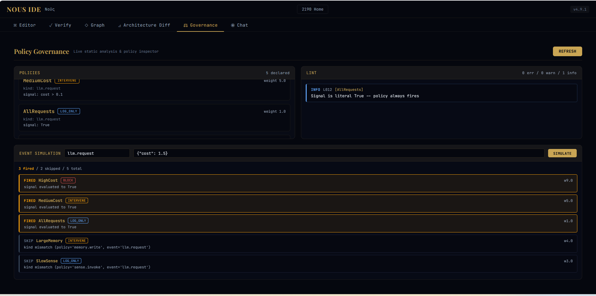
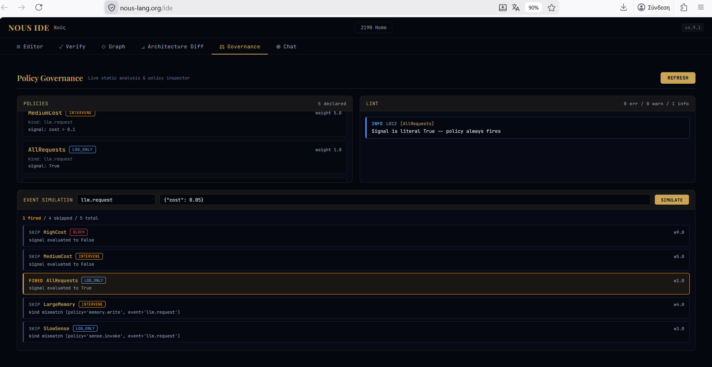
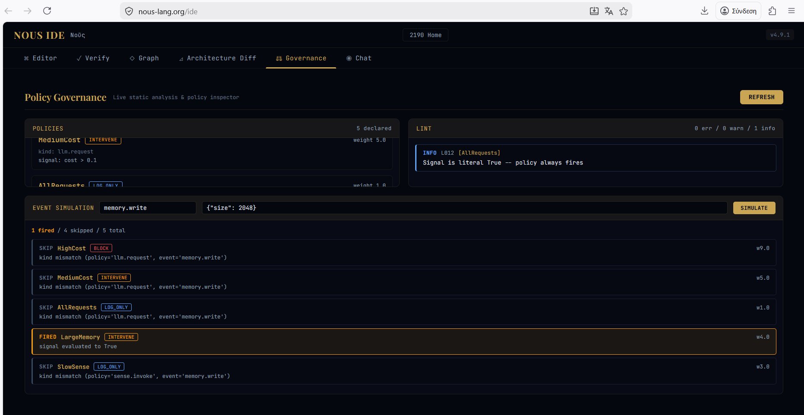
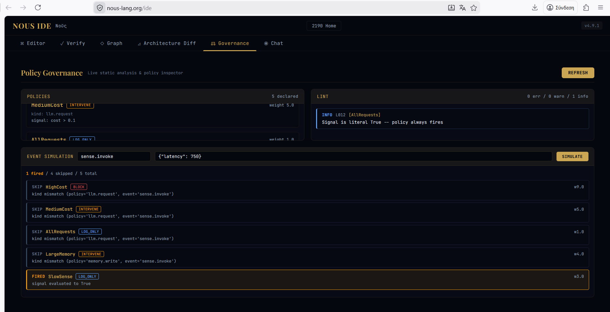

NOUS v5.27.0 — Coverage Proof, Checked Without a Solver
6 June 2026 · 3 min read
A NOUS dossier has always carried a cost proof: a guarantee, checked before execution, that a governed system cannot exceed its declared spend across every path in the proven bound. v5.27.0 puts a second proof beside it — coverage: that over a declared threshold region, no input escapes the blocking-policy net. The obligation travels inside the one signed dossier, and it is honest about its edge. Declare a threshold your rules cover and coverage is PROVEN; declare one they do not and it is REFUTED, fail-closed — NOUS writes no manifest for a system with a gap.
The harder question is who you must trust to believe the proof. Re-running the same solver does not raise trust: a solver bug is reproduced, not caught, and it forces an auditor to install and trust a solver. So v5.27.0 ships the coverage claim as a Farkas certificate. For this linear-real fragment, an unsatisfiable system has a list of non-negative rational multipliers that combine its inequalities into a numeric contradiction — here, 0 < 0. That list is the certificate, and checking it is multiply-and-add over fractions: about forty lines of standard-library Python.
The result is asymmetric verification. Producing the proof uses a solver once, at build time. Checking it needs no solver at all, no NOUS install, and no network — only the cryptography library, to verify the Ed25519 signature. z3 is demoted to an optional second opinion. The coverage SMT stays in the dossier as a human-inspectable cross-check, but it is no longer on the trust path. Cost-only and earlier coverage dossiers remain byte-identical; the manifest field is drop-when-None.
The boundary is stated, not hidden. NOUS proves the cost envelope holds and the control net has no gap — not that the agent cannot misbehave. The policies are monitors, and the certificate attests that the declared governance is sound and was in force. A third party verifies all of it offline, trusting neither the solver nor the party that produced the dossier. nous-lang 5.27.0.
NOUS v5.26.0 — Phase 2.0: Promotion as a Recorded Commitment
2 June 2026 · 3 min read
Phase 1 let a run read its memory and record the consultation in the signed trace. v5.26.0 takes the next step: memory can now influence a run. The influence is deliberately narrow and entirely auditable — a run may promote a previously proven recovery, and the promotion is sealed into the trace as a commitment a third party can verify offline. The runtime never quietly leans on memory; it records what it did and lets you check it.
A promotion is not a dispatch reorder. The trace-emitting paths do not execute the heal sequence, so the sealed record attests something stronger and simpler than “memory changed the run”: that a verified proof exists, and that the promoted heal-path is one this program declares. The commitment is program-bound, not run-bound. The recorded remedy_application carries six fields: the world and producing-soul identities, the cited source entry’s sequence number, the SHA-256 of the stored proof, the promoted heal-path digest, and an applied-at timestamp.
Verification uses only the machinery already in the trusted base. An offline auditor reads the cited chain entry, recomputes the proof SHA over its canonical bytes, re-verifies the embedded conformance certificate with the existing checker, and confirms the promoted digest matches a heal-path the current program declares — recomputing each rule’s digest to do so. No new cryptography, no new trusted code. The promotion is admissible precisely because it selects among already-reachable, already-bounded recoveries: the static envelope proof holds without re-solving.
The whole chain is opt-in and fail-closed. --emit-trace enables --consult-memory (the observation), which enables --apply-remedy (the decision). All three default off. A consulting run that does not apply is byte-identical, in its consultation record, to one that cannot. The determinism boundary widens by exactly one attested field; what a third party can verify offline does not regress. nous-lang 5.26.0.
NOUS v5.25.0 — Memory Phase 1: Deterministic Consultation
1 June 2026 · 3 min read
Phase 0 gave a soul a memory it could write and verify but not yet read into a run. v5.25.0 closes that: a run may consult its persistent memory, and the consultation is recorded inside the signed conformance trace — not as a side channel, but as evidence. The memory stays what it has always been in this project: something a third party can check, not something the runtime can quietly lean on.
A consulting run reads the per-(world,soul) signed hash chain and computes its head — genesis if the chain is empty, otherwise the hash of the last entry. That head is a commitment to the entire consulted prefix: change any earlier entry and the head no longer matches. The run folds the head, the NAME-BOUND world and soul identities, and the entry count into the signed TraceEnvelope as an optional memory_consultation field. An auditor reads the chain, recomputes the head, and compares — offline, with cryptography alone — to prove the run consulted exactly the memory state it claims.
The hard constraint was backward compatibility. The field is canonicalized drop-when-None: when a run does not consult, the member is absent from both the signed body and every persisted form of the trace, so a non-consulting trace is byte-identical to traces produced before the field existed. Every previously signed trace and the demo certificate bundle re-verify unchanged, and the key-agnostic offline verifier accepts consulting and non-consulting traces with zero change. This is RFC 8785 wire-versus-canonical discipline: canonicalization defines how present members serialize, not which members are present.
Phase 1 is the smallest provable unit: a run consults exactly one soul, and a multi-soul consultation refuses fail-closed. Consultation also requires trace emission, because the consultation only has meaning as a recorded, signed commitment. Multi-soul consultation as a canonicalized set, and memory that influences execution behind a proof, are the next phases. nous-lang 5.25.0.
NOUS v5.24.0 — Persistent Soul Memory
31 May 2026 · 3 min read
A soul that cannot remember across runs starts every run from zero. v5.24.0 ships the command surface for a persistent memory that does not compromise the project’s central bargain: the memory is evidence, not a side channel. nous memory exposes four verbs — init, append, verify, reindex — over the four memory modules shipped earlier as a library.
The truth is a set of signed, hash-chained, per-soul entry files, scoped to a world. Each entry is Ed25519-signed over its canonical bytes and carries the hash of the previous entry, so a chain is tamper-evident: a changed field, a broken link, or a missing sequence is caught when the chain is recomputed. The SQLite index is explicitly not the truth — it is a derived lens, rebuilt from the files by reindex, and never consulted for a trust decision. A read of a database mutates its bytes; an evidence anchor cannot.
The per-world signing key is created only by an explicit nous memory init ceremony. Write paths never auto-create trust material: append refuses on an uninitialized world rather than quietly minting a key. verify recomputes the chain from the signed bytes and exits non-zero on any integrity break, so a corrupted store fails loudly rather than returning a plausible answer. This is the refuse-over-guess discipline applied to memory.
Phase 0 is deliberately scoped to recording and verifying evidence; the memory does not yet influence what a run does. Consulting memory as a hashed run input, recorded inside the determinism boundary and in the conformance trace, is the next phase. What ships today is offline-verifiable with the cryptography library alone, no NOUS install required. nous-lang 5.24.0.
NOUS v5.23.0 — Trace Transparency Anchoring
31 May 2026 · 3 min read
A signed trace answers who: the holder of the signing key produced these exact bytes. It does not answer when, nor does it stop the signer from quietly replacing one signed trace with another later. Transparency logs close that gap. v5.23.0 anchors a signed TraceEnvelope to the Sigstore Rekor v2 log.
The anchor is detached. The envelope is frozen and its canonical bytes are already signed, so the inclusion proof — which only exists after submission — cannot live inside it. Instead anchor_trace_to_rekor_v2 returns a separate RekorAnchorV2 whose binding to the trace is cryptographic: the Rekor leaf signs the same canonical bytes, checked at verify time. This matches both the dossier manifest path and the Sigstore detached-bundle convention.
The reachable caller is anchor_compiled_run: it runs the compiled path, signs the trace with an ephemeral key, anchors it, and returns the envelope and the detached anchor together. Anchoring an unsigned envelope is refused — a transparency record should attest a body whose authorship is established. With this, a third party can prove a run trace existed at a point in time and was never altered after, in addition to verifying its signature offline.
NOUS v5.22.0 — Compiled-Path Signed Trace
31 May 2026 · 4 min read
Through v5.21.0 the conformance trace came only from the interpreter. The codegen runtime — the Python that NOUS compiles a program into, the path that actually runs in production — was dark: it produced no trace. v5.22.0 closes that, without touching codegen.
The design rule was a shared recorder, not a parallel one. Two evidence-producing paths that each invent their own “when to record” logic will drift, and a silent divergence between them is the worst outcome. So the compiled runtime calls the samenous_trace recorder the interpreter uses, at the one place every compiled message passes through: ChannelRegistry.send. The recorder is injected post-construction, so the emitted module is byte-for-byte unchanged and the 57-template regression gate holds at 0 diffs.
Two things are deferred, honestly rather than guessed. llm_call events are not recorded on the compiled path (the call boundary is deeper than the choke-point), and the producer soul is recorded as the reserved unknown_soul sentinel rather than parsed out of a channel-name string. What is recorded — the message events and their action labels — is proven equal to the interpreter’s for the same program by a direct-equality test. That equality is the evidence: a third party can compare the two paths and get the same answer.
NOUS v5.21.0 — API Dry-Run Signed Trace
31 May 2026 · 3 min read
Trace emission shipped for the local CLI in v5.18.0. v5.21.0 brings it to the API surface: POST /v1/run gains an opt-in emit_trace flag. When set, a dry-run returns the signed TraceEnvelope — ephemeral Ed25519, verifiable offline with cryptography alone — alongside execution_kind=dry-run. A third party can obtain and verify a run’s labelled trace over the network with no local install.
The honest move was to keep the boundary sharp. A dry-run trace and a live-execution trace attest different things; conflating them would be the masquerade transparency tooling warns against. So the execute branch is not quietly served a dry-run trace — it is tagged execution_kind=refused until real live execution is wired. The default response shape is unchanged for callers that do not opt in, and the discriminator was added now, while only the dry-run path is real, so the contract will not break when live execution arrives.
NOUS v5.18.0 — Runtime Trace Emission
30 May 2026 · 4 min read
The runtime conformance verifier has always been able to take a signed TraceEnvelope and prove it conforms. The gap was upstream: nothing in the runtime produced a trace on its own. The seven obligations were exercised only against hand-fed fixtures.
v5.18.0 closes that gap on the interpreter path. nous run --emit-trace now records each LLM call and inter-soul message as it happens, finalizes the envelope at end of run, and signs it with an ephemeral per-run Ed25519 key. The three subject digests — source, cost-model, constraint-system — are computed by the same path as the compliance dossier, so a trace and a dossier for the same program pin identical artifacts.
The flag is opt-in: without it, nous run is byte-identical to before, because always-on emission would couple run success to pricing validity (the cost spec needs a priced model; many runnable programs are unpriced). The honest scope is stated in the docs: interpreter path only, signed but not yet transparency-anchored.
Available as nous-lang 5.18.0. A third party can now take a real run and confirm offline that its trace is authentic and bound to exactly these artifacts.
NOUS v5.19.0 — Action-Label Binding
30 May 2026 · 4 min read
v5.18.0 made the interpreter emit a signed trace, but every event carried no action label. That left the sequence laws — before, never_after, leads_to, at_most — provable only against hand-written fixtures, never against a real run.
v5.19.0 binds them. The mechanism is implicit-by-name: a speak whose message type is declared in the world’s events block stamps that name onto the trace as the event’s action. No new keyword, no grammar change, no AST change — the binding rides the existing optional action field, and the design deliberately avoided reserving a new word that would have broken an existing program in the regression baseline.
Internal think steps stay unlabeled by design: a model call is internal cognition, not a world-observable event, and the ordering laws are about observable message sequence. A run’s trace now distinguishes llm_call (no action) from message (the declared label).
Available as nous-lang 5.19.0. The sequence laws now enforce against actual interpreter runs.
NOUS v5.20.0 — Producer-Existence for Sequence Laws
30 May 2026 · 5 min read
Binding labels to runs (v5.19.0) left one residue: a law over an event that never occurs in a trace still passes — vacuously. An empty law and a satisfied law looked identical in the verdict. That is fixture-theater by another name.
v5.20.0 makes emptiness visible without rejecting valid programs. A never-run law is not malformed; it is inert. So the response is to surface it, not to error. Two surfaces: at conformance time the verdict now lists sequence_vacuous — laws that passed only because their event had zero occurrences — separately from genuinely proven ones. Statically, the verifier emits a SEQ-PROD warning when a sequence law references an event that no soul ever emits via speak, so the author learns at design time that a law can never fire.
The change is additive: the conformance function signature and the signed conformance certificate are untouched, so signed bytes stay byte-identical and no existing fixture is affected. An auditor reading a verdict can now tell a satisfied law from an empty one.
Available as nous-lang 5.20.0.
Patch 5.20.1 — the /v1/healthcli_commands field was a hand-maintained literal that had drifted from the real subcommand count. It is now derived from the parser and locked by a test, so it can never silently diverge again.
NOUS v5.17.0 — The at_most Cardinality Law
29 May 2026 · 4 min read
v5.16.0 completed the pairwise ordering family — before, never_after, and leads_to, the canonical Dwyer precedence, absence, and response patterns. All three answer the same kind of question: in what order may two events occur? v5.17.0 adds a different kind of question entirely: how many times may one event occur?
events { escalate, resolve }
law at_most(2, escalate) # escalate may fire at most twice
at_most(N, label) takes a non-negative integer and a single event label, and bounds the number of times that label may occur across a run. This is a cardinality property, not an ordering one, and the distinction has a concrete consequence in the proof model.
The three ordering laws share a single static model: each event label becomes one real-valued rank, and each law emits a strict inequality between two ranks. That model has exactly one rank per label — it assumes each label occurs once and asks only where it sits in the order. Counting is invisible to it. A bound on the number of occurrences is a statement about a multiset over ticks, not about a total order over distinct labels, so it cannot be expressed as a rank inequality at all.
The honest consequence: at_most contributes nothing to the static SMT script — no rank declaration, no assertion. Its static layer is parse-validation only (the count is a non-negative integer; the label must be declared). A world that declares only at_most laws is therefore trivially consistent under nous verify-sequence: a cardinality bound imposes no ordering, so there is nothing for Z3 to refute. The BOX does not pretend to prove a count it cannot observe.
The real obligation lives in the runtime DICE. The conformance check counts occurrences of the label in the signed execution trace — re-derived from the signed source, never read from an unsigned sibling — and fails the run if the count exceeds N. An absent label is zero occurrences, which satisfies any non-negative bound. This is the project's split made literal: probabilistic execution on one side, deterministic evidence on the other, with the cardinality guarantee carried by the signed count rather than a static fiction.
With at_most, the Phase 2 sequence operator set is complete: three pairwise ordering laws plus one cardinality law, each offline-verifiable with only cryptography and z3-solver. nous-lang 5.17.0 is live on PyPI.
NOUS v5.16.0 — The Ordering Law Family
29 May 2026 · 5 min read
v5.15.0 gave NOUS a second axis of evidence: alongside the SMT cost proof that bounds how much a program may spend, a sequence law bounds in what order its events may occur. That release shipped one ordering law, before(A, B). v5.16.0 completes the family with two more — and they are not arbitrary: they are the canonical patterns Dwyer's survey of real-world temporal specifications found to cover the overwhelming majority of ordering requirements.
The three laws, together:
events { authenticate, access, audit }
law before(authenticate, access) # access requires an earlier authenticate
law leads_to(access, audit) # every access is eventually audited
law never_after(audit, access) # once audited, no further access
before(A, B) is precedence: every B must have an earlier A. leads_to(A, B) is response (the TLA+ ~> operator): every A must be eventually followed by some B. never_after(A, B) is absence in the after scope: once A has occurred, B is forbidden. Precedence and response are duals over the same order — one fails on a B with no preceding A, the other on an A with no following B — while absence is the prohibition reading.
All three share a single static model. Each event label becomes one real-valued rank; each law emits a strict inequality between two ranks. before and leads_to emit (< rank_A rank_B); never_after emits the operand-swapped (< rank_B rank_A). Because the model is shared, nous verify-sequence detects a contradictory pair across operators: declaring both before(A, B) and never_after(A, B) forces rank_A < rank_B and rank_B < rank_A at once, which Z3 reports as unsat — the law set is rejected before any run.
At runtime, each law contributes its own check to the seventh conformance obligation, evaluated against the signed execution trace and re-derived from the signed source — never read from an unsigned sibling. A trace that violates any declared ordering yields conformant: false with the offending occurrence named.
One operator was deliberately not added. after_only(A, B) — "B only after A" — reduces, under the single-rank model, to exactly before(A, B) on both the static and the runtime surface; shipping it would add a name without adding meaning. The one genuinely new shape still open is at_most(N, label), a bounded count: cardinality cannot be expressed by a single rank per label, so it is a separate model extension rather than one more assertion, deferred to its own arc.
Three operators, one proof model, full offline-verifiable evidence on both the static and the runtime side. nous-lang 5.16.0 is live on PyPI.
NOUS v5.15.0 — Sequence Laws
28 May 2026 · 6 min read
Every NOUS release so far has produced one axis of evidence: a static, SMT-backed proof that a governed program cannot exceed its declared cost envelope, and — since v5.13.0 — a signed certificate that one specific run stayed inside it. Cost answers how much. It says nothing about order.
v5.15.0 adds that second axis. A sequence law is a declared ordering constraint over a named event alphabet: authenticate before access, validate before commit. You declare the alphabet up front and write the law:
world TradingFloor {
cost_cap: 0.50 USD
max_ticks: 8
events { authenticate, access_ledger, submit_order }
law before(authenticate, access_ledger)
law before(access_ledger, submit_order)
}
The explicit events block is deliberate. A law that references an undeclared label is a typo, not a new event, and NOUS refuses the program rather than inventing the label — the same refuse-over-guess discipline the rest of the toolchain follows. The validator enforces it with three codes: SE001 (laws without an alphabet), SE002 (an undeclared label), SE003 (a duplicate label).
Like cost, sequence has two halves — and they mirror the project's central bargain, probabilistic execution but deterministic evidence. Call them the box and the dice.
The box is a compile-time proof. nous verify-sequence turns each event label into a rank variable and each before(A, B) into the assertion that A's rank is below B's, then asks Z3 whether the whole set is satisfiable. A coherent rulebook is sat (a valid total order exists) and exits 0; a self-contradicting one — a cycle such as before(a,b) plus before(b,a) — is unsat and exits 1. Note the polarity is the opposite of the cost proof, which asserts the negation of the cap and proves unsat. Because sat and unsat mean opposite things in the two checks, sequence verification is its own top-level verb, not a flag bolted onto nous verify.
The dice is a runtime obligation. The conformance certificate already recorded six booleans (binding, surface, assumption discharge, bound transfer, authorization, trace signature). v5.15.0 adds a seventh, sequence, conjoined into the overall verdict. For a law before(A, B) it holds exactly when every event labelled B has some earlier event labelled A — no B before any A — checked per occurrence, vacuously true when no B ever occurs. The label rides on the trace event's existing signed action field, so no trace schema changed: traces signed before this release are untouched. And the laws are re-derived from the signed source, never read from an unsigned sibling; a tampered law moves the spec hash and the binding obligation turns false.
Itemizing a new boolean inside the signed certificate body is a wire-format change, so the certificate is now schema-versioned. New certificates are v2 and carry sequence_ok; a v1 certificate never had the field, and the canonicalizers exclude it for any certificate whose recorded schema is below 2. The consequence is the one that matters for a transparency log: every certificate signed before v5.15.0 — including the demo certificate anchored in the public Rekor v2 log — re-canonicalizes byte-identical and still verifies, across the in-process path, the JSON wire format, and the shipped offline verifier.
Stated honestly, the limits: only before(A, B) is implemented today — never_after, after_only, and a bounded at_most are the next operators, and the certificate field is already kind-agnostic for them. verify-sequence currently needs a priced model, because the spec carries cost and sequence together; decoupling them is planned. And as with cost, the certificate proves the trace conforms, not that the trace faithfully records reality — emit-from-inside-the-runtime is the mitigation there.
53 new tests across the arc, floor 778 to 826, zero regressions, both servers live. pip install nous-lang==5.15.0. The reference is docs/SEQUENCE_LAWS.md.
NOUS v5.13.0 — The Runtime Conformance Certificate
26 May 2026 · 5 min read
For eleven versions NOUS has produced one kind of evidence: a static, SMT-backed proof that a governed program cannot exceed its declared cost envelope. That proof is about every possible run. It says nothing about any particular run that actually happened.
v5.13.0 closes that gap with the runtime conformance certificate. The new nous conformance certify takes a signed execution trace, re-derives the proof bounds from the signed source and pricing (never from an unsigned block), recomputes the realized cost under those exact rates, and checks six independent obligations: binding, surface, assumption discharge, bound transfer, authorization, and trace signature. The result is recorded in a standalone Ed25519-signed conformance.json.
A signed statement, in the SCITT sense
The certificate is deliberately not fused into the dossier manifest. It is a separate signed artifact that references the manifest by its three signed hashes (source, spec, pricing) and the trace by the hash of its canonical body. This mirrors the SCITT architecture's split between a Signed Statement and the artifacts it describes, and it keeps the manifest byte-identical: one static proof can have many conformance certificates, one per run.
Stapled, not phoned-home
With --anchor rekor_v2 the certificate's own body bytes are submitted to the tile-backed Sigstore Rekor v2 log, and the returned inclusion proof is stapled into the certificate as a transparency_log sibling — outside the signed body, so the author signature stays valid whether or not the certificate is later anchored. The reuse is total: the same artifact-agnostic v2 write path and the same read-path verifier the dossier uses, with zero new cryptography.
What it proves, and what it does not
The shipped offline verifier confirms, with cryptography plus stdlib and no NOUS install: the certificate's Ed25519 signature, its binding to this exact trace and manifest, the trace's own signature, and — when anchored — the full Rekor v2 inclusion proof over the certificate body. It does not re-derive the SMT bounds offline; that requires the toolchain and remains the online nous conformance verify path. The honest claim is precise: a third party can confirm offline that this signed verdict is authentic and bound to these exact artifacts.
11 new tests, floor 753 to 764, zero regressions, both servers live. pip install nous-lang==5.13.0.
NOUS v5.12.0 — Rekor v2 on Both Dossier Paths
25 May 2026 · 4 min read
v5.11.0 landed the Rekor v2 + RFC 3161 write path on nous dossier — the command that anchors a .nous source with an adjacent signed manifest. But NOUS has a second dossier path: nous dossier-spec, which starts from an agentskills.io SKILL.md skill directory (the shape nous skill-export produces). That path still topped out at the v1 anchor. v5.12.0 closes the gap.
One capability, both entry points
The v2 emit branch and verifier selection in build_dossier_spec now mirror build_dossier exactly: submit the manifest's canonical bytes to the tile-backed Sigstore Rekor v2 log, recover the ephemeral ECDSA-P-256 leaf signature from the server-returned leaf, request an RFC 3161 trusted timestamp over that signature, and embed both in the dossier. The emitted verify_offline.py is the v2 variant with the production log key pinned. Whichever path you start from — a raw .nous world or a SKILL.md skill directory — the evidence is the same.
Tested offline, proven live
The new path ships with a _test_rekor_anchor_v2 hook so the seven structural tests exercise the v2 emit and verifier selection without a live Rekor submission or TSA call — deterministic and network-free in CI. The real cryptographic path was then proven end-to-end on the server: a SKILL.md skill exported, anchored via dossier-spec --anchor rekor_v2, and verified offline to a PASS at a live log index.
Numbers
7 new tests (PYTEST_FLOOR 738 to 745), zero regressions across the template harness. Both servers report 5.12.0; PyPI: nous-lang 5.12.0; tag v5.12.0.
NOUS v5.11.0 — Rekor v2, Part Four: Dossier Emission and Trusted Time
24 May 2026 · 6 min read
This is the fourth and final part of the Rekor v2 migration. Parts One and Two pinned the trust root and made the Sigstore SigningConfig the source of truth for which log NOUS submits to; Part Three (v5.9.0 and v5.10.0) built and wired the v2 read path. v5.11.0 closes the loop: NOUS can now emit a v2-anchored, timestamped dossier and verify it offline.
Emitting a v2 anchor
nous dossier --anchor rekor_v2 submits the manifest's canonical bytes to the tile-backed Sigstore Rekor v2 log (log2025-1). The leaf carries a per-submission ephemeral ECDSA-P-256 signature over those bytes — the same Path-beta dual-signing scheme used on the v1 path: the Ed25519 manifest signature proves authorship, the ECDSA leaf signature ties the manifest bytes to the transparency-log entry. The submission returns the canonicalized leaf body, the signed checkpoint, and the inclusion proof in a single round-trip.
Trusted time comes from the TSA, not the log
The v2 tile-backed log returns integratedTime: 0 and a null inclusion promise synchronously on submit — it does not assert a trusted integration time at submission time. So NOUS sources trusted time from an RFC 3161 timestamp authority instead. After submission, NOUS recovers the leaf signature from the server-returned leaf body and requests an RFC 3161 token over exactly that signature from the Sigstore TSA. The token's message imprint binds the trusted time to the same signature an offline verifier later recovers from the anchor — no separate field to trust, and no assumption that the locally generated signature equals the anchored one.
Offline verification
The emitted verify_offline.py is the v2 variant, assembled from the shipped read-path modules with the production log key pinned into its allowlist. It performs five independent checks: the Ed25519 manifest signature, the leaf-to-manifest ECDSA tie, the checkpoint Ed25519 signature, the RFC 6962 inclusion proof, and the RFC 3161 trusted timestamp. All of it runs with only the cryptography library and the standard library — no NOUS install, no network. The full path was proven end-to-end against the live log: a real emitted dossier, verified offline to a PASS, at log index 4598985.
Numbers
7 new tests (PYTEST_FLOOR 687 to 738), zero regressions across the template harness. Both servers report 5.11.0; PyPI: nous-lang 5.11.0; tag v5.11.0.
NOUS v5.9.0 & v5.10.0 — Rekor v2, Part Three: The Read Path
21-23 May 2026 · 6 min read
Parts One and Two of the Rekor v2 migration pinned the trust root and made the Sigstore SigningConfig the authoritative source for which log NOUS submits to. Part Three builds the verifier for the new tile-backed log format and wires it into the verification flow — read side first, write side in Part Four.
v5.9.0: the read-path verifier, as modules
v5.9.0 ships the v2 verifier as three composable modules, not yet wired into the live flow. rekor_entry normalizes hashedrekord v0.0.1 and v0.0.2 leaf bodies into a single value object (a DER SubjectPublicKeyInfo public key and a hex digest) and recognizes and refuses DSSE. rekor_checkpoint verifies a C2SP signed-note checkpoint — the Ed25519 log signature and key ID per the signed-note spec — and an RFC 6962 inclusion proof, taking the root hash and tree size from the verified checkpoint. rekor_verify_v2 composes both with the Path-beta leaf-to-manifest ECDSA tie and reports four independent per-step results (leaf digest, leaf signature, checkpoint signature, inclusion proof), so an auditor inspecting a failed anchor sees exactly which cryptographic link broke rather than a single opaque false.
The RekorAnchorV2 manifest schema carries a rekor_api_version discriminator present only in v2 blocks. v1 blocks omit it and the reader treats absence as v1, so every historical v1 dossier and its signature remain byte-identical.
v5.10.0: dispatch and the portable verifier
v5.10.0 wires the read path in. parse_manifest_json_with_anchor_v2 dispatches a manifest's transparency_log block by its rekor_api_version: absent or 1 routes to the existing v1 SET-based path, byte-identical; 2 routes to the v2 checkpoint path; anything higher is refused. The v1 read path is unchanged.
offline_verifier_builder assembles a standalone verify_offline.py (cryptography plus stdlib only) from the shipped v2 read-path modules, guarded by an anti-drift equivalence test so the bundled verifier cannot silently diverge from the in-package one. The production Sigstore Rekor v2 log key (log2025-1) is pinned into the verifier allowlist, proven against a real checkpoint. The release also adds a nous verify step to the pipeline UX smoke and a differential test asserting the AST runner and codegen derive an identical semantic surface, plus a fix to the runner's per-cycle cost-ceiling handling.
Numbers
PYTEST_FLOOR 596 to 687 across the two releases, zero regressions across the template harness. PyPI: nous-lang 5.10.0; tags v5.9.0 and v5.10.0.
NOUS v5.8.0 & v5.8.1 — SigningConfig-Driven Anchoring, and Gating the Runtime
21 May 2026 · 7 min read
Two releases on the same day, each closing a gap the previous work left explicit. v5.8.0 is the second part of the Rekor v2 migration; v5.8.1 finishes a gate that v5.7.0 started.
v5.8.0: the SigningConfig is the source of truth
Until now, the Rekor endpoint and request paths were hardcoded constants in rekor_anchor.py. The Sigstore client specification is explicit that this is wrong: the Rekor v2 instance URL must not be hardcoded, because the operator rotates the log and freezes the previous instance. Clients are told to read the endpoint from a SigningConfig and select the highest API version they support.
v5.8.0 adds rekor_signing_config, a loader and selector for the Sigstore SigningConfig v0.2 format. It parses the rekorTlogUrls list, filters to entries within their validity window, groups by operator, and selects the highest major API version the client supports. NOUS supports v1 today, expressed as a single constant; raising support to v2 is a deliberate one-line change paired with the v2 verifier, not an accidental upgrade.
Failing closed
The security-relevant behavior is what happens when only an unsupported version is available. If a future production SigningConfig lists only a v2 endpoint and the client supports only v1, the selector raises a typed error and refuses to submit, rather than silently downgrading or mis-parsing a v2 entry as v1. This honors the specification's requirement that clients gracefully fail on an unknown API version. The module was validated against the real mirrored production SigningConfig (which selects v1) and against synthetic v2-present and v2-only configurations.
Submission and offline verification are unchanged. The actual v2 read path — tile-backed inclusion proofs and checkpoints, the hashedrekord v0.0.2 and DSSE v0.0.2 entry formats — remains future work, to be built against the live v2 instance once it is distributed.
v5.8.1: the gate reaches the runtime
v5.7.0 introduced an undefined-name gate that refuses to emit Python referencing a name that does not exist, catching a class of bug that previously passed every compile-time check and only NameError-ed at runtime. But the gate was wired only into nous compile. The runtime executes the AST directly with no codegen, so nous run never produced Python for the gate to scan — an unbound name would still reach runtime.
v5.8.1 closes that. Before delegating to the runtime, nous run performs a throwaway codegen pass and runs the same gate; hot-reload gates its generated code before compiling it. Both fail closed: on a semantic error nothing executes and the process exits non-zero. compile, run, and hot-reload now reject the same sources by the same check, with no second name-resolution implementation to drift out of sync.
Numbers
v5.8.0 added 14 tests in tests/test_rekor_signing_config.py, including selection against the real mirrored config (PYTEST_FLOOR 581 to 595). v5.8.1 added one test pinning the run-gate refusal path (595 to 596). Zero regressions across the 51-template harness. Both servers report 5.8.1; PyPI: nous-lang 5.8.1; tags v5.8.0 and v5.8.1.
NOUS v5.7.0 & v5.7.1 — Compiler Correctness: null, guard...else, and the Undefined-Name Gate
21 May 2026 · 8 min read
A compiler can pass every structural check and still emit code that fails the moment it runs. v5.7.0 targets exactly that gap: sources that parse, validate, and generate Python cleanly, then raise NameError at runtime. Three fixes, one theme — the generated code should mean what the source says.
A real null literal
NOUS previously had no way to write an absent value. v5.7.0 adds null (and the interchangeable none) as a first-class literal that compiles to Python None. Equality against it compiles to identity: x == null emits x is None, and x != none emits x is not None. Absence checks are now correct regardless of the value's type, instead of relying on a name that did not exist.
guard ... else
A guard returns early when its condition is false. The optional else action was being silently dropped by codegen, which also turned any statement after the guard into dead code. v5.7.0 fixes the grammar and the emitter so the else action runs before the early return, and the trailing action runs only when the guard holds. The failure path is explicit again.
The undefined-name gate
The structural fix underneath both is a new gate: before any generated module is written, the compiler scans it for references to undefined names and refuses with a typed CodegenSemanticError that names the symbol and line. The gate is dev-only in its dependency — it uses a static analyzer that is not part of the shipped wheel — so it degrades to a no-op where that analyzer is absent, which is why the clean-venv release phase still passes. It is the backstop that turns a runtime NameError into a compile-time refusal.
v5.7.1: world-less sources
The gate immediately earned its keep. The codegen for law constants HEARTBEAT_SECONDS and COST_CEILING returned early when a source had no world block, yet the rest of the generated module referenced those constants unconditionally — so world-less sources generated Python with undefined names, now caught by the v5.7.0 gate. v5.7.1 emits both constants always, with safe defaults, while keeping the world-bearing output byte-identical. Eight world-less development sources became gate-clean.
Numbers
v5.7.0 added 10 tests (tests/test_s85_codegen_correctness.py), v5.7.1 added 5 (tests/test_s86_law_constants.py); PYTEST_FLOOR 566 to 581. The regression harness was re-baselined to gate-verified output with zero unexplained diffs. Both servers on 5.7.1; PyPI: nous-lang 5.7.1; tags v5.7.0 and v5.7.1.
NOUS v5.6.0 — Rekor v2, Part One: Mirroring the Trust Root
20 May 2026 · 5 min read
Sigstore is replacing the Rekor transparency log with a tile-backed v2 that is cheaper to run and has a redesigned API. NOUS anchors manifests into Rekor, so the migration matters — but it has to be done carefully, because the v2 instance URL is rotated and the previous instance frozen. v5.6.0 is the first, deliberately small step: get the trust root in place, change no runtime behavior.
The mirror
v5.6.0 pins a snapshot of the production Sigstore SigningConfig, resolved via TUF, into the repository at infra/sigstore/signing_config.json. As of the snapshot, the production config is v1-only: it lists rekor.sigstore.dev at majorApiVersion: 1 and no v2 URL, by Sigstore's stated decision to withhold the v2 endpoint from TUF until clients have upgraded to verify v2 entries. Pinning the config means NOUS reads a known, reviewed trust root rather than whatever TUF returns at submission time.
Refresh without contaminating the runtime
The mirror is kept current by a stdlib-only refresh script that drives a version-pinned sigstore CLI through a subprocess. The sigstore tool lives in an isolated venv and is never imported into the NOUS runtime, so the dependency surface of nous-lang is unchanged — the wheel does not grow a heavy transitive dependency. A monthly systemd timer runs the refresh as an unprivileged user under a hardened sandbox, writing to a staging path; promoting a changed config into the repository is a deliberate commit, not an automatic one.
Nothing consumes it yet
Deliberately, no runtime code path reads the mirror in v5.6.0. rekor_anchor.py is unchanged. This release is the trust-root plumbing; the endpoint selection that consumes it arrived in v5.8.0, and the v2 read path itself remains future work. 6 tests in tests/test_signing_config_mirror.py validate the pinned mirror offline — mediaType, the rekorTlogUrls shape, and v1 presence. PYTEST_FLOOR 560 to 566. PyPI: nous-lang 5.6.0; tag v5.6.0.
NOUS v5.5.0 — A Verdict, with Evidence
17 May 2026 · 9 min read
v5.4.0 shipped the public verification surface as three boolean fields: signature_ok, rekor_set_ok, rekor_inclusion_ok. It worked. It also forced every downstream consumer to invent their own logic for what those booleans meant in combination, and gave them no way to distinguish "this check failed" from "this check was not run." For an auditor running a compliance pipeline, that distinction is the difference between a defensible audit and a guess.
v5.5.0 ships a state-of-the-art response shape that closes both gaps. It is fully backward compatible: clients that send the v5.4.0 request body get the v5.4.0 response shape, byte-identical. Clients that opt in by sending a new policy field get a structured verdict.
What the new shape looks like
The opt-in is one extra field in the request body:
The response now contains a top-level verdict (ACCEPT or REJECT), a trust_level (rekor_anchored, ed25519_only, or none), the policy_applied with all defaults filled in for the audit record, eight per-check results with a discriminated ok field, an evidence block of raw facts (hashes, log indices, public keys, anchor age), and a human_readable block with a one-sentence verdict summary, a trust explanation, and a next-steps array.
Every layer answers a different question. The verdict answers "should I accept this." The trust level answers "if I accept it, how much should I trust it." The policy applied answers "what rules produced this verdict, recorded permanently for the audit." The checks answer "where did each independent verification step land." The evidence answers "what raw facts did the verifier see." The human-readable block answers "how do I explain this to a human in one line."
Why a discriminated check field matters
The single biggest semantic improvement in v5.5.0 is the ok field on each check. In v5.4.0, a Rekor check was either true, false, or null (null meaning "no anchor present"). The null collapsed two distinct states: "the dossier was not anchored" and "the check did not apply for some other reason." That collapse left auditors unable to distinguish, say, an unanchored development dossier from one whose anchor metadata was malformed.
In v5.5.0, each check has exactly one of four values:
true — the check ran and passed.
false — the check ran and failed. The errors array contains the cause.
"skipped_unanchored" — the check was skipped because the dossier has no transparency_log block. Applies to the four Rekor-specific checks.
"skipped_no_policy" — the check was skipped because the policy does not require it. Currently applies to rekor_anchor_age when no age cap is configured.
An auditor writing a compliance script can now say "require ok=true on these specific checks; tolerate skipped_unanchored on these others" and have the policy be unambiguous. That is a vocabulary the V1 shape did not have.
Trust level: separating ACCEPT from rekor_anchored
v5.5.0 distinguishes the verdict (ACCEPT or REJECT) from the trust level (rekor_anchored, ed25519_only, none). The verdict is whether the policy you applied passed. The trust level is how the system thinks you should weight that verdict downstream.
Concrete: a dossier with a valid Ed25519 author signature but no public anchor, verified under policy.require_anchor=false, gets verdict=ACCEPT and trust_level=ed25519_only. The dossier passed the policy you set, but the system is telling you the public log does not corroborate it. That is honest. The same dossier under policy.require_anchor=true gets verdict=REJECT and trust_level=none.
This split lets the browser page at nous-lang.org/verify.html default to a permissive policy (the UX would be hostile if a legacy dossier just said REJECT with no explanation), while audit pipelines default to strict and get a hard REJECT on the same input. Both are correct for their context.
HYBRID offline verifier
The offline verifier shipped from nous-lang.org/verify_offline.py is now byte-extracted from dossier.VERIFY_OFFLINE_PY_HYBRID. It runs in two modes:
Default: strict. Refuses unanchored dossiers. This is what an EU AI Act-grade compliance pipeline wants.
--allow-unanchored: hybrid. Accepts both anchored and unanchored dossiers, downgrading trust to ed25519_only on the latter.
The previous verifier, VERIFY_OFFLINE_PY_WITH_REKOR, refused unanchored dossiers unconditionally. That made it useless for verifying legacy dossiers, which had to fall back to the toolchain path. The HYBRID verifier closes that gap without compromising the strict default.
UI implications
The verify.html page and the IDE Dossier tab were refactored end-to-end for V2. The new UI shows the verdict banner first, then the four status pills (SIGNATURE, SOURCE ID, ANCHORED, REKOR ANCHOR), then the evidence block, then collapsible trust explanation and per-check diagnostics. The Rekor log index is clickable and links straight to the Sigstore entry page. The footer shows the next-steps array when REJECT, hiding the section entirely on ACCEPT to avoid clutter.
The verify.html page sends {require_anchor: false} as the default policy so drag-dropping any dossier produces a useful response rather than a hostile rejection. The IDE Dossier tab uses the same default. Auditors who want strict verification call the endpoint directly from a script with their chosen policy, or use the CLI which defaults to strict.
Numbers
6 new tests in tests/test_dossier_hybrid_template.py covering the unanchored verification path. 12 new tests in tests/test_verify_dossier_endpoint_v2.py covering V2 endpoint dispatch, verdict computation, policy defaults, check skipping, evidence assembly, and error propagation. PYTEST_FLOOR raised 542 to 560. The 57-template regression harness produced 0 diffs. All 10 release-pipeline phases passed: grammar sync, pytest floor, regression, version consistency, pyflakes, build, wheel content gate, clean-venv install, UX smoke, PyPI upload.
Both production servers report version: 5.5.0. The V1 endpoint behavior is byte-identical to v5.4.0 when policy is omitted; this was verified by a 9-test V1 suite still passing unmodified. PyPI: nous-lang 5.5.0. GitHub: tag v5.5.0.
See also
docs/VERIFY_DOSSIER.md contains the full V2 API reference, the verdict-computation logic, the four-state ok field semantics, and the failure-mode table. docs/REKOR_ANCHOR.md covers the anchoring side: how a dossier acquires its transparency_log block and the Path-beta dual signing rationale. Live surfaces: https://nous-lang.org/api/v1/verify-dossier, https://nous-lang.org/verify.html, https://nous-lang.org/ide.html, https://nous-lang.org/verify_offline.py.
NOUS v5.4.0 — The Public Verification Surface
17 May 2026 · 8 min read
v5.3.0 anchored every signed NOUS dossier into the Sigstore Rekor transparency log via Path-beta dual signing. v5.4.0 closes the gap on the consumer side: a public endpoint, a standalone page, an IDE tab, and a byte-identical offline verifier — three independent trust paths that let anyone, anywhere, audit a NOUS dossier without installing NOUS itself.
The gap v5.4.0 closes
v5.3.0 made every signed NOUS dossier independently auditable via a public transparency log. But to actually run that audit, a verifier needed three things: the NOUS CLI installed, the right Python version on the path, and familiarity with the manifest schema. That is a high bar for the EU AI Act conformity case it is meant to serve. A regulator, an internal auditor, a downstream consumer — none of them should need to install a programming language to check a cryptographic signature.
v5.4.0 ships three independent surfaces, each addressing a different audience.
Browser convenience
Drop a manifest.json or skill_export.zip onto nous-lang.org/verify (or the new Dossier tab in the IDE). The page client-side extracts the manifest from the ZIP via JSZip, POSTs to /api/v1/verify-dossier, and renders three PASS/FAIL pills with a clickable log_index linking to the live Sigstore Rekor entry. No login. No NOUS install. No API key. Useful for quick checks and for sharing a verifiable artifact link with anyone.
Offline reproducible
Download verify_offline.py from the same page. Single dependency: the cryptography library, which ships with most modern Python distributions. Run it in a directory containing manifest.json and source.nous; exit code 0 is PASS, 1 is FAIL, 2 is environment error. The verifier is byte-identical to the string embedded in dossier.py as VERIFY_OFFLINE_PY_WITH_REKOR — the same code that nous dossier-spec emits inside every anchored bundle. This is the canonical trust path.
Toolchain (full)
For organizations that already have the toolchain: pip install nous-lang then nous dossier verify path/to/dossier/. Runs the offline verifier plus the SMT re-check against pricing/defaults.toml. No behavior change in this release for users on this path.
Why granularity matters
The new endpoint returns a structured response with separate booleans for each independent cryptographic check: signature_ok (Ed25519 author signature verifies against the manifest's claimed author public key), rekor_set_ok (Rekor SignedEntryTimestamp ECDSA-P-256 signature verifies AND Rekor's signing key is in the pinned allowlist), and rekor_inclusion_ok (the leaf body parses as hashedrekord/0.0.1, its sha256 matches the manifest's canonical body bytes, AND the embedded submitter signature verifies).
Each field reflects exactly one claim. signature_ok proves authorship. rekor_set_ok proves the log entry exists and was signed by a trusted Sigstore instance. rekor_inclusion_ok proves the manifest in hand is exactly the manifest that was anchored.
The internal API — rekor_anchor.verify_rekor_anchor_offline_detail() — exposes the same granularity for any code that wants to make trust decisions based on which specific check failed. A failed rekor_inclusion_ok with rekor_set_ok=true is meaningfully different from the inverse: the first means the dossier has been tampered with after Rekor logged a different version; the second means the Rekor entry itself is suspect.
The legacy verify_rekor_anchor_offline() bool API is retained, refactored to delegate. A regression test asserts that the AND of the three detail booleans equals the legacy boolean across all three captured S80 fixtures — outcome byte-equivalent.
Boundaries
POST /v1/verify-dossier is not in the trust path. It runs the same checks as verify_offline.py but inside the NOUS API — if you do not trust the API operator, the response means nothing. The offline verifier is the only path where the verification computation happens entirely on the verifier's machine, with no network round-trip and no dependency on the issuer's infrastructure. The browser page is, accordingly, framed as a quick check, not as audit evidence.
The endpoint is rate-limited (30 requests per minute per IP) and the request body is capped at 256 KiB. Real-world dossiers are 2-10 KiB; the cap exists to prevent abuse, not to constrain legitimate use.
Numbers
9 new endpoint tests in tests/test_verify_dossier_endpoint.py covering Pydantic strict mode, parse failures, real Ed25519 sign/verify roundtrip, tampered-signature detection, tampered-field detection, and the real-manifest-with-fixture-anchor integration case. 3 new tests appended to tests/test_rekor_anchor.py exercising the new RekorVerifyDetail model and asserting legacy-bool equivalence.
PYTEST_FLOOR raised 530 to 542. The 57-template regression harness produced 0 diffs. All 10 release-pipeline phases passed: grammar sync, pytest floor, regression, version consistency, pyflakes, build, wheel content gate, clean-venv install, UX smoke, PyPI upload. Both production servers report version: 5.4.0 and respond to /v1/verify-dossier with the structured shape. PyPI: nous-lang 5.4.0. GitHub: tag v5.4.0.
See also
docs/VERIFY_DOSSIER.md contains the full API reference for the endpoint, the three trust paths, and failure modes. docs/REKOR_ANCHOR.md covers the anchoring side: how a dossier acquires its transparency_log block and the Path-beta dual signing rationale (why ECDSA-P-256 leaf instead of Ed25519; Sigstore issue #851). Live surfaces: https://nous-lang.org/api/v1/verify-dossier, https://nous-lang.org/verify.html, https://nous-lang.org/verify_offline.py.
Your Stop Button Is Not Article 14 Compliance
16 May 2026 · 12 min read
The EU AI Act becomes enforceable for high-risk systems on 2 August 2026. I have spent the last few weeks reading Article 14 carefully — not the summaries, not the consultancy decks, the actual text — and I keep coming back to the same uncomfortable conclusion. Most of the oversight architectures I see being built will not satisfy it.
Not because they are badly built. Because they were built around a misreading.
The misreading is this: human oversight gets treated as a UI feature. A dashboard. A halt button. A reviewer screen somewhere in the workflow. That reading is intuitive — humans oversee things, so we give them a screen and a control — but the regulation is asking for something stricter than that. It is asking for a design property of the system itself.
The good news is that this is fixable. The fix is architectural, not cosmetic. And once you see what Article 14 is actually asking for, the rest of the design follows.
What Article 14 actually requires
Before we get to the architecture, the regulation. Article 14 is one short page of legal text and it is worth reading the whole thing once, but the operational substance lives in paragraphs 1 and 4.
Paragraph 1 sets the design obligation. High-risk AI systems shall be designed and developed in such a way that they can be effectively overseen by natural persons during the period in which they are in use. The word that does the work there is designed. Not "monitored", not "wrapped", not "supervised". Designed. The capability for oversight has to be a property of the system from the start, not something layered on top after the fact.
Paragraph 4 is the operational expansion. It lists what the overseer must be enabled to do — and it is more than most readers remember. The overseer must be able to:
understand the system's capacities and limitations, and detect anomalies and unexpected performance
stay aware of automation bias when interpreting the output
correctly interpret what the system produced
decide, in any given situation, not to use the output or to disregard it
intervene or halt the system through a stop mechanism
That is five distinct capabilities, not one. And only the last one is what most teams reach for first.
The industry has started calling this the three-tier oversight framework — Understand, Intervene, Halt — and the framing is useful because it forces you to admit that a stop button alone covers roughly one-fifth of what the regulation asks for. Understanding, interpreting correctly, detecting anomalies, resisting automation bias, deciding to disregard — none of those are UI controls. They are capacities the system has to make available to the overseer, and the overseer has to be able to exercise them under real operational conditions.
Paragraph 5 adds a separate rule for biometric identification — two natural persons must independently verify any decision before action — but that rule applies narrowly, and is not what this piece is about. The harder question, the one most architectures will fail on, is in paragraph 4.
The honest reading is this. Article 14 is asking for a system that treats human oversight as a first-class structural property. Not a review screen. Not a kill switch. A property of the architecture that survives audit, survives staff turnover, and survives the moment when the regulator asks the only question that matters: how do you know.
Verification is not governance
The mistake almost every AI architecture makes is collapsing two layers into one. Verification and governance look similar from the outside — both involve checks, both produce records, both block bad outputs — but they are answering different questions, and Article 14 quietly depends on you keeping them apart.
Verification asks: does this output conform to what we said it would do? Did the model stay inside its declared budget. Did the generated code pass the tests. Did the response match the schema. These are questions with deterministic answers. A signature, a hash, a parser, a test runner. The answer is yes, no, or we could not check.
Governance asks something different: is this output allowed to proceed? That question has nothing to do with whether the output is technically correct. An output can be perfectly valid and still not admissible. The pricing was correct, but the human approver has not signed off yet. The code passed every test, but the workflow it came from requires sign-off from a named compliance officer. The generation was clean, but admission is conditional on something the generator cannot see.
A verifier cannot answer the second question. It does not know about authority. It does not know about validity windows. It does not know that this particular workflow needs a named human to attest before the output can be released. A verifier knows what you told it to check. Governance knows what the system is allowed to do.
This distinction is not academic. It is the reason most stop-button implementations fail under audit. The button stops execution, but nothing in the architecture explains why a particular output was admitted in the first place. The verifier said yes, the system released. The governance question — by what authority — was never asked, because nothing in the architecture was structured to ask it.
Article 14 is often read like a verification requirement, but its practical burden is architectural governance. It says "human oversight" and most teams hear "checks". But every one of the five capabilities in paragraph 4 is a governance capability, not a verification one. Understanding the system's limits, resisting automation bias, deciding to disregard, halting — these are admission decisions. They are exercised by an authority, not by a checker.
Once you see it this way, the architecture rearranges itself. You stop asking "did the model produce a valid output" and start asking "is this execution admissible under the current governance state". The verifier still runs. The governance layer sits above it. And the model — generating, summarising, proposing — sits below both. Named in the receipt. Never the author of it.
Two questions, same pressure
I did not arrive at this distinction alone. Most of what I have written so far crystallised through a conversation with Brian James, who has been building an independent governance infrastructure under a project he calls MCK. We approached the same problem from opposite directions and ended up needing the same vocabulary.
My work started from a question about probabilistic systems. How do you make generation operationally stable? Cost cannot be unbounded. Output cannot be unverifiable. The sandbox cannot be unattested. The receipt cannot be unsigned. Each of those constraints forced a deterministic primitive. NOUS bounds cost with formal SMT proofs before execution. AetherProof produces signed receipts that anyone can verify offline using a public key. AetherCode runs every output through a five-gate verifier inside an isolated sandbox and refuses to bill if the verification subsystem itself cannot run. The architecture is built around the assumption that the model is the unstable part of the system, and the deterministic layer below it has to absorb that instability before anything is released.
Brian's work started from the opposite question. How do you preserve operational governance when probabilistic systems enter regulated execution environments? His architecture, in his own framing, was never model-first. The governance layer he built does not depend on a model existing at all. It treats every artifact entering the execution boundary the same way — source records, workflow outputs, model generations — as governed objects subject to admissibility rules. When a model output arrives at the boundary, it is governed exactly like any other artifact. No special trust. No special treatment. Just another input being checked against the obligation state of the workflow.
Different entry points. Same pressure underneath. Once a system moves beyond simple generation into operational execution, the questions of authority, admissibility, accountability and replay stop being optional. They become the architecture, or the architecture fails them.
The conceptual framework Brian developed for this layer is the obligation shell. The way I have come to understand it from our exchange — paraphrased here in my own words rather than quoted from his — is that an obligation shell is a governance envelope wrapped around any artifact, output, workflow, or execution request before that artifact enters runtime. The shell carries the conditions under which the artifact is allowed to proceed: what evaluations have to succeed, which authority has to attest, what evidence the attestation has to reference, and within what time window the attestation remains valid. The shell exists from the moment the artifact is provisioned, not at the moment a gate runs. It is a first-class object in the architecture — addressable, queryable, attributable, and replayable as state.
Brian and I have agreed to converge on a small set of shared terms for talking about this layer publicly. Each of these terms describes a primitive that any architecture honest about Article 14 will eventually need:
Obligation shell — the governance envelope I just described
Requester and Authority — the actor who initiates an execution request, kept structurally distinct from the actor (or policy, or governance layer) empowered to admit or block it
Admission and Admissibility — the act of allowing an artifact to proceed, and the property of being allowed to proceed
Attestation primitive — a recorded act by an accountable authority, treated as a first-class object rather than a log line
Governed artifact — anything that has to pass through the governance boundary before it can be used
Governance trace — the lineage of how a governance decision was reached
Execution lineage — the parallel lineage of what runtime execution actually did once admission was granted
Derived admission state — the admission outcome computed from the obligation posture, rather than asserted by the requester
The shared vocabulary used in this piece describes the governance boundary layer: the point where artifacts, outputs, workflows, or execution requests become subject to authority, admissibility, attestation, and traceable lineage.
These terms emerged from implementation pressure on both sides. I arrived at fragments of them building NOUS and AetherCode. Brian arrived at a fuller version building MCK. Where the terms collide, we have agreed to use the same words rather than make readers translate between dialects.
The reason this matters for Article 14 is that the regulation presupposes exactly this kind of structure. Paragraph 4 is asking for capabilities that only an obligation shell — or something isomorphic to one — can deliver. The overseer must understand the system's limits, and the system must record what limits applied at the moment of execution. The overseer must be able to disregard the output, and the system must record by what authority the disregard was exercised. The overseer must be able to halt operation, and the system must record the transition from operational to halted as a governance event, not just a process termination.
A stop button cannot do any of this on its own. A verifier cannot do any of this on its own. The architecture has to be one where these acts are first-class.
What this approach does not solve
I want to be careful here. Nothing I have described — not the verifier, not the obligation shell, not the signed receipts, not any combination of the three — is a complete answer to Article 14. The architecture covers the structural part of the regulation. The parts it does not cover are real, and they have to be acknowledged or the rest of the piece is just sales talk dressed up as engineering.
Automation bias is not an architecture problem. Paragraph 4(b) asks the system to be provided in a way that lets the overseer remain aware of the tendency to over-rely on AI output. No primitive in the world can train someone's attention. That capability lives in training, in interface design that surfaces uncertainty without hiding it, in workflow choices that resist habituation. A signed receipt does not stop a tired overseer from approving every output because the previous fifty looked fine. The architecture can give the overseer the tools. It cannot make them use them.
Live monitoring is the deployer's job, not mine. Paragraph 4(a) asks the overseer to "duly monitor" the system. NOUS produces a post-hoc dossier. AetherProof produces a per-output receipt. Aether Shield enforces request-time policy and emits a record of every block at the gateway layer. None of those are a unified operational dashboard sitting in front of a human reviewer. That dashboard has to be built by whoever deploys the system, against their own incident response procedures and their own escalation paths. A programming language, a signing service, and a request gateway do not turn themselves into a SOC.
The kill switch is fundamentally a sociotechnical problem. The regulation talks about a stop mechanism in 4(e), and every architecture I have described can stop. NOUS programs can be halted. AetherCode can shut its execution path. Aether Shield can ban an agent. But "stop" in the regulatory sense is not just process termination. It is a recorded, attributable, auditable act performed by a named authority — and most deployments do not yet have the organisational scaffolding to specify who that authority is, when they are reachable, what their escalation tree looks like, and how the act is recorded outside the system being halted. The architecture supports the mechanism. It cannot supply the authority.
The biometric two-person rule is out of scope. Paragraph 5 requires that for certain biometric identification systems, two qualified persons independently verify any decision before action is taken. That rule does not generalise to the rest of high-risk AI, and none of the systems I work on are biometric. Mentioning it here only to say I am not claiming to address it.
The honest summary is this. The architecture covers a specific slice of Article 14 — the structural slice, the part that has to be designed in rather than added later. It gives the overseer verifiable evidence to interpret correctly. It records who admitted what and under what conditions. It enables disregard and halting as first-class governance acts rather than process events. That is necessary. It is not sufficient.
The parts that are missing — automation bias training, live operational monitoring, organisational kill-switch governance — are not architectural problems pretending to be solved. They are deployment problems that have to be solved by the deployer, often by people who are not engineers at all. A vendor who pretends otherwise is selling a checkbox.
Where this is going
The conversation that produced this piece ended on a point Brian made that has stayed with me. The vocabulary we converged on did not come from theory. It came from implementation pressure on both sides. He was not designing a governance framework in the abstract. I was not designing a verification stack in the abstract. We were both shipping systems that had to behave correctly under operational load, and the architecture forced the language. Two solo builders, working independently, ending up with parallel terminology because the boundary being described is real.
His read on where this is heading, and I agree with it, is that the broader industry is about to learn the difference between verification and governance the hard way. Most current architectures collapse them into a single layer. That collapse is going to start producing audit failures, accountability gaps, and incident reports that nobody can answer cleanly. The next twelve to eighteen months are going to make this distinction harder to ignore than it has been until now.
If you are responsible for an AI system that will fall under Article 14, the practical question to take into your next architecture review is not "do we have a stop button". The practical question is closer to this:
Can we name, for any output the system produced, the authority under which it was admitted into use?
Can we replay, deterministically, the governance state of the workflow at the moment the output was admitted?
Can the overseer disregard an output, and is that act recorded as a separate, attributable event?
Does our halt mechanism halt the system as a governance event, or just as a process termination?
If a regulator asked us how we know any of the above, can we answer without referencing the model?
If most of those answers are not yet "yes", you are not in a bad position. You are in the position most teams will be in on August first. The question is whether you start now or in July.
Article 14 is one of the more demanding parts of the AI Act, but it is not the hardest part. The hardest part is realising it was never asking for a UI in the first place.
The EU AI Act becomes enforceable for high-risk systems on 2 August 2026. Penalties for non-compliance with Article 14 obligations reach EUR 15 million or 3% of worldwide annual turnover, whichever is higher (Article 99(4)). The EUR 35 million / 7% tier applies only to the prohibited practices listed in Article 5, and is not what Article 14 violations fall under.
Cryptographically signed receipts, immutable audit trails and formal SMT verification are above the explicit baseline the regulation sets, not formally required by it. They are how I have chosen to build for a regulation that is asking for "design that enables effective oversight" without specifying the implementation. A deployer reasoning about compliance should treat them as one defensible interpretation of the design obligation, not as the mandated form of it.
This piece is technical commentary on a regulation. It is not legal advice. Deployers and providers should consult qualified counsel for compliance determinations specific to their use case.
The shared vocabulary used in this piece for governance primitives — obligation shell, requester and authority, admission and admissibility, attestation primitive, governed artifact, governance trace, execution lineage, and derived admission state — was developed by Brian James in the context of MCK. The terms are used here as agreed shared terminology for the convergent layer between his architecture and mine. The definitions in this piece are paraphrased in my own wording rather than reproduced from his framing; any imprecision in the paraphrase is mine. Where I have applied the terms to AetherCode, NOUS or AetherProof, the application is mine; the underlying conceptual framework is his.
NOUS v5.2.0 — Closing the Skill Loop
16 May 2026 · Session 77 · 5 min read
The arc, two releases in
v5.1.0 shipped nous dossier-spec earlier today, giving skill consumers a way to produce EU AI Act Annex IV-aligned, Ed25519-signed compliance dossiers from existing SKILL.md + nous.yaml pairs. That release served the consumer side of the agentskills.io ecosystem: people who have a skill and want to attest its cost behavior.
v5.2.0 closes the loop for authors. Specifically, skill authors who write their agents in NOUS. The .nous program is the runtime authority: world, cost ceiling, souls, senses, mind models, nervous-system topology, instincts, mitosis, immune, telemetry. SKILL.md is the discovery and admission surface: it tells 26+ AI platforms (Claude Code, Codex, Gemini CLI, Copilot, Cursor, VS Code, and others) what the skill does, when to load it, and what its cost envelope is. Without an export path, the author had to keep the two by hand. nous skill-export closes that gap.
What v5.2.0 ships
The release is structured around three surfaces over one translator. All three call the same underlying skill_export.export_skill() function:
HTTP API:POST /v1/skill/export, rate-limited 10/minute per API key, returns application/zip with optional signed dossier subdirectory.
IDE button:↗ Export Skill in the editor toolbar at nous-lang.org/ide.html, next to Download .py.
The translation is deliberately lossy and one-way. NOUS constructs the agentskills.io schema cannot hold (instinct bodies, nervous-system topology, mitosis, immune, telemetry, heal rules, message contracts) are dropped from the emitted skill. The original .nous program retains them at runtime; the emitted skill carries only the cost-relevant projection.
Annex IV dossier, ephemeral key per request
When with_dossier: true (the default for API and IDE), the emitted ZIP contains a dossier/ subdirectory byte-identical to what nous dossier-spec would produce against the same emitted skill: deterministic source.nous envelope, signed manifest.json, pricing.toml, public_key.b64, human-readable README.md, and stand-alone verify_offline.py.
The signing key differs between surfaces. The API and IDE generate a fresh Ed25519 keypair per request, sign the manifest with it, and discard the private key before the response returns. The public_key.b64 in the dossier is sufficient for offline verification, but the bundle cannot be re-signed with byte-identity by re-running the request. For a stable signing key across many exports, use the CLI plus nous dossier-spec --key PATH.
Release metrics
Source change
13 files, +2,028 insertions, -10 deletions
New modules
skill_export.py, cli_skill_export.py
New tests
62 (40 unit, 11 CLI, 11 endpoint incl. end-to-end verifier)
PYTEST_FLOOR
441 → 503
Regression diffs
0 (across 57 templates)
CLI commands
43 → 44
Release pipeline ritual
The same 10-phase atomic release pipeline ran for v5.2.0 as for v5.1.0 earlier today:
Version consistency: all six locations agree on 5.2.0.
Pyflakes: 7 release-path files clean.
Build: wheel + sdist produced.
Wheel content gate: _version.py, nous.lark, grammar_data.py, plus the v5.1.0 skill_md / dossier_spec / cli_dossier_spec, plus the new skill_export.py and cli_skill_export.py; 9 templates; Version: 5.2.0 in METADATA.
Clean-venv install smoke: fresh venv, install wheel, exercise nous templates extract + nous compile; both exit 0.
PyPI upload: twine check OK, twine upload OK.
Each gate is structurally hard. A failure at any point aborts before upload. There is no partial PyPI publish; each release is atomic with the artifact set it produces.
The deeper change
v5.0.0 made NOUS cost-verification currency-agnostic. v5.1.0 wrapped that verification into a portable, spec-compliant compliance artifact. v5.2.0 closes the loop so NOUS authors can flow source through to that compliance artifact without leaving their editor. The unifying through line, ever since Session 16, has been the same: take probabilistic execution and produce deterministic evidence that travels with it.
Three releases in nine days. Same architecture each time. Same release pipeline. Same regression discipline. The point of v5.2.0 is that the loop now closes without manual sync: one source file, three surfaces, one signed dossier whose chain of custody anyone can verify offline with the standard cryptography library.
Skill Export from the NOUS IDE — .nous Source to Signed Annex IV Bundle in Three Clicks
16 May 2026 · Session 77 · 6 min read
The gap this closes
v5.1.0 shipped earlier today with nous dossier-spec: a CLI that produces EU AI Act Annex IV-aligned, Ed25519-signed compliance dossiers from any existing agentskills.io-compliant skill directory. That release served skill consumers: someone with a third-party SKILL.md in hand, who wants to produce a mechanical proof that the skill behaves within a declared cost envelope.
This release serves skill authors. Specifically, skill authors who write their agents in NOUS. The .nous program is the runtime authority: it encodes the world, the cost ceiling, the souls, their senses, the mind models, the nervous-system topology, and so on. The agentskills.io SKILL.md is the discovery and admission surface: it tells 26+ AI platforms (Claude Code, OpenAI Codex, Gemini CLI, GitHub Copilot, Cursor, VS Code, and others) what the skill does, when to load it, and what its cost envelope is. Without an export path, the author had to keep the two by hand. nous skill-export closes that loop.
What gets translated
The translation is lossy and one-way. The agentskills.io schema is strictly smaller than the NOUS language. The exporter projects a NousProgram onto the subset that the schema can hold:
dropped (the original .nous program retains them at runtime)
The dropped constructs are not lost in the runtime: the original .nous program continues to govern them. They are simply not expressible in the agentskills.io schema, so the emitted skill carries only the projection the schema can hold. The cost envelope is the projection that matters most: SKILL.md + nous.yaml carry enough information for the SMT solver to prove the cost cap holds across every reachable execution.
Three surfaces, one implementation
All three surfaces call the same underlying skill_export.export_skill() function and produce byte-identical output for the same inputs.
1. CLI
nous skill-export market_monitor.nous \
--description "Monitor crypto prices and alert on threshold crossings" \
--output ./my-skill/
Writes ./my-skill/SKILL.md and ./my-skill/nous.yaml. Run nous dossier-spec ./my-skill/ --key path/to/persistent-signing.key afterwards to produce a fully signed Annex IV dossier with a stable signing key.
Returns a streaming application/zip with the skill directory and (by default) the signed dossier sub-directory inside it. Rate-limited to 10 requests per minute per API key. Each request generates a fresh Ed25519 keypair, signs the manifest with it, and discards the private key before returning. The public key is bundled in the dossier; offline verification works without any NOUS install.
3. IDE button
The NOUS IDE editor toolbar gained a new button next to Download .py: ↗ Export Skill. Three prompts (description, optional skill name, API key on first use), one POST, one streaming ZIP download. The whole flow takes about five seconds end to end, of which roughly half is the SMT solver running.
What is in the bundle
With with_dossier: true (the default for all three surfaces), the ZIP contains ten files:
<skill-name>/
SKILL.md
nous.yaml
dossier/
source.nous # deterministic envelope (SHA in manifest)
manifest.json # signed manifest (canonical JSON)
SKILL.md # verbatim copy
nous.yaml # verbatim copy
pricing.toml # resolved pricing layer (SHA in manifest)
public_key.b64 # Ed25519 public key, raw base64
README.md # human-readable Annex IV summary
verify_offline.py # stand-alone offline verifier
The dossier directory is byte-identical to what nous dossier-spec would produce when run against the same emitted skill, with one exception: the signing key is ephemeral on the API and IDE surfaces. Each HTTP request generates a fresh keypair, signs once, and discards the private key before the response returns. The public_key.b64 file is sufficient for offline verification, but the bundle cannot be re-signed by re-running the export with the same expectation of byte-identity. If you want a stable signing key across many exports, use the CLI surface with nous dossier-spec --key PATH.
Determinism boundary
The skill files themselves are byte-deterministic: same NousProgram plus same metadata in, same (SKILL.md, nous.yaml) out. No timestamps, no random IDs, no host-dependent information. This determinism is required by the source.nous envelope, whose SHA-256 anchors the signed manifest.
The signed dossier as a whole is not byte-deterministic across calls, because the Ed25519 signature varies per ephemeral keypair. But the manifest's source_sha256 and pricing_sha256 fields are deterministic given the same inputs, which is what lets two independent parties verify they produced the same underlying artifact even when the signatures differ.
The verification chain
Every bundle includes verify_offline.py, which depends only on the standard cryptography Python library:
cd <skill-name>/dossier/
python3 verify_offline.py
The verifier checks two things: (a) the Ed25519 signature on manifest.json verifies under public_key.b64, and (b) the SHA-256 of source.nous matches the value in the manifest. That is the entire chain of custody. The solver verdict (proven or refuted) is itself part of the signed manifest, so a refuted skill cannot be silently re-signed as proven.
What this is and is not
The export covers a specific slice of skill compliance: a spec-compliant agentskills.io SKILL.md, a NOUS sidecar declaring cost and tool budgets, and an Ed25519-signed Annex IV dossier with a formal SMT proof of cost-cap satisfaction.
The export does not cover: prompt-injection vulnerability assessment, output toxicity, IP leakage, or PII-handling checks. It does not cover runtime behavior beyond cost (latency, accuracy, robustness). It does not cover the NOUS constructs the agentskills.io schema cannot hold (instincts, mitosis, immune, nervous-system topology). For those, ship the original .nous program alongside the skill. The skill is the discovery and admission surface; the .nous program is the runtime authority.
NOUS v5.1.0 — Annex IV Dossiers for the SKILL.md Ecosystem
16 May 2026 · Session 77 · 4 min read
The gap
The agentskills.io ecosystem is growing fast and overwhelmingly unattested. Snyk’s February 2026 ToxicSkills audit looked at a broad sample of public skills and found 36.8% with detectable security flaws, 13.4% with flaws rated critical, and 76 confirmed malicious. Skill consumers cannot independently verify a skill’s runtime cost behaviour. There is no signed, auditable artifact tying a skill’s declared capability to a mechanical proof of its bounded resource consumption.
This is sharper in the EU. The AI Act, in force since August 2024, requires high-risk AI providers to document the “general logic of the AI system and the algorithms” (Annex IV(2)(b)) and to ensure systems “operate consistently for their intended purpose” with appropriate accuracy, robustness, and cybersecurity (Article 15). Cost-bound behaviour is one such design choice that providers must document and defend.
nous dossier-spec bridges that gap. It reads a skill directory containing the standard SKILL.md and a small adjacent nous.yaml sidecar, runs the existing NOUS Z3 SMT verifier against the declared cost budget, and emits a complete dossier under Ed25519 signature.
Each tool declares an upper bound on call count and per-call token counts. NOUS multiplies these out, looks up token prices in a versioned pricing TOML (also SHA-pinned in the manifest), and asks Z3 whether the cost cap holds across every reachable execution. The verdict is either proven (no execution path exceeds the cap) or refuted (with a concrete counterexample, recorded in the manifest).
Why a sidecar and not a frontmatter extension
The agentskills.io spec defines a strict frontmatter schema. The reference SDK’s Go validator (skills-ref validate) maintains an AllowedFields whitelist and rejects unknown top-level keys. Embedding the cost declaration under a nous: key would fail strict validation. The spec’s official metadata: extension field is constrained to flat str -> str mappings — too narrow for the nested tools list. A sidecar leaves SKILL.md byte-identical and 100% spec-compliant. Existing tooling that does not know about NOUS simply ignores nous.yaml. NOUS-aware tooling consumes it. Both sides win.
The output bundle
Running nous dossier-spec ./my-skill/ produces a directory containing eight files:
source.nous — deterministic envelope wrapping SKILL.md and nous.yaml; its SHA-256 anchors the manifest
manifest.json — signed manifest (canonical JSON, sorted keys)
SKILL.md — verbatim from input
nous.yaml — verbatim from input
pricing.toml — resolved pricing layer (SHA in manifest)
public_key.b64 — Ed25519 public key, raw base64
README.md — human-readable Annex IV summary
verify_offline.py — stand-alone offline verifier (only requires the cryptography Python library; no NOUS install needed)
The verifier checks two things: (a) the Ed25519 signature on manifest.json verifies under public_key.b64, and (b) the SHA-256 of source.nous matches the manifest. That is the entire chain of custody.
What this is and is not
nous dossier-spec does not execute the skill. It does not patch or inject anything at runtime. It proves a property about the skill as declared, given a pricing model with a documented SHA-256, and seals that proof under signature. It does not assess prompt-injection vulnerability, output toxicity, IP leakage, or any of the other axes ToxicSkills measures. Those are valuable; they are not what this artifact attests.
What v5.1.0 ships
Three new modules: skill_md.py (schema + parser + translator), dossier_spec.py (pipeline helper), cli_dossier_spec.py (CLI wrapper). 44 new tests across schema validation, parser edge cases, translator semantics, end-to-end CLI flows, and a regression guard for the existing nous dossier subcommand. 6 new test fixtures covering minimal, basic, extended, invalid-currency, over-budget, and missing-nous-block cases. Pytest floor lifted 397 → 441. Documentation page docs/SKILL_MD_SIDECAR.md covers the full schema reference, CLI flag documentation, and source envelope format.
The Manifest schema is unchanged in v5.1.0; skill_md dossiers share the same canonical form as nous dossier outputs. A source_kind discriminator field is planned for v5.2.0 to let downstream tooling programmatically distinguish the two flavours. Currency support beyond USD and EUR is also planned; the sidecar already accepts any ISO 4217 shape at parse time.
Try it
pip install nous-lang==5.1.0
nous dossier-spec ./my-skill/
NOUS v5.0.0 — End-to-End EUR Cost Verification with Currency-Agnostic SMT
3 May 2026 · Session 70 · 5 min read
The arc
Until v5.0.0, NOUS built the same evidence chain in one currency. Cost caps were declared in USD. Pricing tables priced models in USD. Manifests signed USD-denominated proofs. The architecture was currency-agnostic at the SMT level — rationals do not have a currency — but the surface area carried _usd suffixes on every per-token rate and a defensive escape hatch in the validator that refused to emit a proof unless the cap currency was USD. EU AI Act conformity requires EUR-denominated evidence. Either the language went currency-aware or the evidence was incomplete.
v5.0.0 is that change, in four commits and a tag. The pricing schema sheds its _usd suffix in favour of a per-table _currency field. A loader-side translator accepts pre-v5 files with one DeprecationWarning per load and a sha-stable invariant: a v1.0 file and its v2.0-equivalent migrated form produce identicalPricingTable.sha256(). A new nous prices upgrade CLI migrates files on disk while preserving every comment, blank line, and formatting decision. The SMT validator drops the v4.13.0 USD-only block, and the Phase 5a currency-mismatch hard-block (shipped Session 69) becomes the asfaleia floor. Z3 round-trip on EUR proves the architecture is currency-blind in fact, not just in claim.
The semver bump is MAJOR for three concrete reasons: the pricing TOML field names are publicly documented, the PricingTable.sha256() canonical form changed for any pre-v5 dossier, and the loader now accepts both schema versions. No production dossiers existed at release; the sha-break has zero deployed impact. That window is now closed — future schema changes must be sha-stable.
Phase 5b Step 1 — The schema rename
Five fields on PricingEntry dropped their _usd suffix:
Per-table _currency (defaulting to "USD" for backward compatibility) is now authoritative. Set it to "EUR" for an EUR-native table; the SMT path enforces consistency between the table currency and the cap currency.
Backward compatibility runs through a loader-side translator, not Pydantic AliasChoices. Three reasons in order of weight: (1) the translator emits exactly one DeprecationWarning per v1 file load — auditable in pytest output and in production logs, where AliasChoices would accept either name silently; (2) if a TOML accidentally declares both input_per_1m_usd = "X" and input_per_1m = "Y" on the same entry, the translator raises with a clear message naming both fields, where AliasChoices would silently pick one; (3) the loader is the only place that knows about v1.0, so the new canonical names live in exactly one place.
Sha-stability is the empirical contract. PricingTable.sha256() builds the canonical form from model_dump()after the translator runs. Both a v1.0 file and its v2.0-equivalent migrated form compute to a64df6712e4090eb.... The invariant is locked in by tests/test_pricing_v1_compat.py::test_sha256_v1_equals_v2_equivalent. Production dossiers signed against post-v5 canonical forms will not silently break when the TOML on disk is later upgraded with nous prices upgrade.
Phase 5b Step 7 — The migration tool
nous prices upgrade <input.toml> -o <output.toml> [--force] migrates a v1.0 pricing TOML to v2.0. --in-place is the alternative, mutually exclusive with -o. --force opts in to overwriting an existing output file.
The line-based regex preserves every comment, every blank line, and every formatting decision the user made. A tomllib round-trip would have lost all of it. The pattern only matches when the field name is the first non-whitespace token on the line and immediately followed by =, so comment lines starting with # are untouched, string values containing the field name are untouched, and substring confusion (MY_input_per_1m_usd_FIELD) is impossible.
Validation runs before the write. The flow: read source, parse to detect schema version, apply rename in memory, re-parse via tomllib, run the loader translator (no-op since schema is now "2.0"), validate via PricingTable.model_validate, only then write to disk. A migration that would produce invalid v2.0 TOML aborts with the source untouched.
Idempotent on v2.0 input. Eighteen tests across two classes cover the pure function and the full handler.
Phase 5b Step 8+9 — EUR end-to-end
The v4.13.0 USD-only block in smt_emit.py::_validate_world is gone. Programs declaring cost_cap: 0.50 EUR against a pricing table with _currency = "EUR" compile cleanly under --smt.
What stayed is more important than what left. The Phase 5a guard _validate_currency_consistency (S69 commit 1eb3e6b) is the asfaleia floor: it refuses to emit a proof when pricing currency differs from cap currency. Two checks layer in emit_smt:
_validate_currency_consistency(world, pricing) — refuses mismatched currency pairs. Hard-block, no override.
The currency-mismatch matrix:
Pricing currency
Cap currency
Pre-v5
v5.0.0
USD
USD
OK
OK
EUR
EUR
REJECTED
OK (NEW)
USD
EUR
REJECTED
REJECTED
EUR
USD
REJECTED
REJECTED
The two REJECTED-after rows are caught by Phase 5a; the OK-NEW row is what v5.0.0 unlocks. The SMT solver itself never asks about currency — SMT-LIB sees rationals. Phase 5a's job is to enforce same-unit-ness at the source level before any obligation reaches Z3.
Worked example — mistral-small-3 at 0.50 EUR
The shipped pricing/eur_example.toml declares four illustrative Mistral models. Run a one-soul world against mistral-small-3:
Eleven tests in tests/test_smt_emit_eur.py verify the four Z3 round-trip cases (provable UNSAT, refuted SAT, scaled provable, scaled refuted) plus a TestCurrencyMismatchStillRejected class that confirms USD-pricing-with-EUR-cap and EUR-pricing-with-USD-cap remain hard-blocked.
The eur_example.toml ships with notes = "ILLUSTRATIVE EUR pricing. Verify before SMT use." and verified_by = "estimated" on every entry. nous prices age flags these models conspicuously. Production users replace illustrative tables with provider-verified rates before signing manifests.
Phase 5b Step 10 — The release ritual
The 10-phase release pipeline ran clean end-to-end:
Pre-flight: clean tree, tag v5.0.0 not present.
Grammar sync, pytest floor (394 ≥ 394), regression harness (0 diffs across 57 templates), version consistency (7 sources aligned), pyflakes (7 production files clean).
One pip-metadata gotcha during dev, documented for future major bumps: editable installs read _version.__version__ from source on every import but read importlib.metadata.version("nous-lang") from the metadata captured at install time. After bumping _version.py, the consistency test fails until the editable install is rebound: pip install -e . --break-system-packages --no-deps --force-reinstall. Wheel-installed environments (clean venvs in release pipeline phases 7 to 9) get the right version automatically.
57/57 regression templates baseline-stable. Zero drift.
15 files modified, 5 created: pricing/eur_example.toml, tests/test_pricing_v1_compat.py, tests/test_cli_prices_upgrade.py, tests/test_smt_emit_eur.py, plus the wheel and sdist in dist/.
1 new CLI subcommand: nous prices upgrade.
1 escape hatch retired: the v4.13.0 USD-only block in _validate_world.
1 sha-stability invariant locked: pre/post-migration tables produce identical sha256.
Try it
pip install --upgrade nous-lang — the CLI surface is unchanged outside of the new nous prices upgrade subcommand.
NOUS v4.15.0 → v4.18.0 — A Fleet-Operable Compiler with Audit-Stable Diffs
2 May 2026 · Session 68 · 6 min read
The arc
Between v4.14.0 and v4.18.0, NOUS stopped being a compiler that runs on one machine and started being a compiler whose state is legible across a fleet. Five releases, one direction: cross-machine replay logs become inspectable, world templates become writable over HTTP, the diff path stops crashing on non-route nerves, the install no longer needs an extra to work, and every comparison labels its own sources in a way an auditor can trust.
The throughline is provenance. A regulator under EU AI Act Annex IV does not ask “did your tests pass” — they ask “show me what changed, where, and how you know.” This bundle is the surface area for that question.
v4.15.0 — Reading the replay fleet
Two read-only HTTP endpoints, both sandboxed to NOUS_REPLAY_DIR (default /var/lib/nous/replays):
GET /v1/replay/list enumerates *.jsonl logs with cheap last-line metadata: size, mtime, last seq_id, last hash, last event kind. Tail-reads the final 8 KB of each file. No chain validation — that remains /v1/replay/verify’s job. The list endpoint is for fleet dashboards: which machines logged, when, how far.
POST /v1/replay/diff compares two logs lockstep by (seq_id, hash). Verdicts are a closed set: identical, divergent, truncated_a, truncated_b, error. The first divergence event is reported side-by-side — not a textual diff, an event-level one, because hashes diverge at events, not at lines.
Path safety is non-negotiable: filenames are rejected on path separators, leading dot, parent-dir traversal, and outward-pointing symlinks. The endpoint cannot be used to read anything outside the replay directory regardless of how clever the client is. 11 tests, pytest floor 278 → 289.
v4.16.0 — Writing templates over HTTP
PUT /v1/templates/{name} is the RESTful counterpart to the existing GET. Saving a .nous world template runs the full safety pipeline before a single byte hits disk:
Hard auth. An empty NOUS_API_KEYS environment returns 403 (server unconfigured for writes). Missing or invalid keys return 401. The GET path keeps soft auth for backward compatibility; writes do not.
Name sanitisation. Pattern ^[A-Za-z0-9_][A-Za-z0-9_-]{0,63}$, plus a resolved-path check that the file lands inside TEMPLATES_DIR.
Lint gate. The governance_lint linter runs against the submitted source. Errors block the save unless the client passes force=true. A linter crash is treated as having errors, not as a green light.
Backup. An existing file is copied to <name>.nous.bak.<ts_us> and the directory is pruned to the 5 most recent backups.
Atomic write. Tempfile + fsync + os.replace. No reader ever sees a partial file.
SHA-256 receipt. The response includes the hash of the bytes written, so the client can verify what landed without re-fetching.
The original Session 64 plan listed /v1/policies/{list,validate,save}. Aliasing was rejected because list and validate already exist as /v1/governance/{policies,lint}, and a .nous file is a full world (souls, mind, governance) — there are no separate policy files in NOUS. The save endpoint is named after the artifact it produces. 13 tests, pytest floor 289 → 302.
v4.16.1 — Diffs that do not crash
Three call sites in the diff path were doing blind route.source / route.target attribute access. Correct for RouteNode; dead wrong for every other nerve statement: MatchRouteNode, FanInNode, FanOutNode, FeedbackNode. The trading_floor template (which uses FeedbackNode) hit AttributeError → HTTP 422 on every diff request.
The fix: isinstance-dispatch over the five nerve variants in behavioral_diff._get_routes, behavioral_diff._get_entrypoints, and the nested _get_routes inside nous_api_server._transform_diff_for_ide. Each variant emits the correct (src, dst) edges (or, for entrypoints, the correct “is-a-target” set).
The lesson is older than this bug: when a base type has variants, attribute access without dispatch is a latent crash. 8 regression tests pinned to the four non-route variants. Pytest floor 302 → 310.
v4.17.0 — Install you can trust
Since Session 64, cli.py imports cli_dossier at module load, which transitively imports cryptography for Ed25519 signing. The dependency was already a hard runtime requirement — it was just hidden behind the [smt] extra. A clean pip install nous-lang in a fresh venv would import-fail before printing the help text.
The fix is small and the message is honest: cryptography moves to base. The [smt] extra now contains only what it claims to: Z3. pip install nous-lang is sufficient for the entire CLI surface, including nous dossier and signed manifests. Optional remains optional; required becomes visibly required.
v4.18.0 — Diffs that name themselves
Before v4.18.0, the IDE’s “Safe to Deploy” card hardcoded the strings original.nous and modified.nous. Fine when both sides were in-editor pastes. A liability the moment a diff could be saved-template-vs-editor, paste-vs-paste, or replay-vs-replay — the labels lied about where the bytes came from, and a nous dossier bundle would inherit the lie.
v4.18.0 adds a DiffSide Pydantic model with a closed Literal enum of source kinds: editor, paste, template, replay, file, unknown. The server runs render_diff_side() — one canonical renderer — and returns original_label and modified_label in the /v1/diff response. The IDE renders what the server says. Audit logs record what the server said. nous dossier evidence captures what the server said. Three different consumers, one label string, no drift.
Backward compatibility is intentional: clients on 4.16.x that do not send provenance still get a valid response — both labels render as (unknown source). New kinds are explicit additions to the Literal enum; silent string drift is a parse error, not a deployment surprise. 17 tests, pytest floor 320 → 337.
NOUS v4.13.3 — Conservative Cost Caps with --smt-margin
29 April 2026 · Session 64 · 4 min read
v4.13.1 introduced formal SMT proof that total_cost ≤ declared_cap. v4.13.2 made manifests self-verifying offline. v4.13.3 closes a small but real gap: regulators and procurement teams sometimes want a visible buffer between the proven bound and the budget line. Not "we proved we will not exceed $0.50" but "we proved we will not exceed $0.40, against a $0.50 declared cap, with 20% safety margin."
The flag
nous verify file.nous --smt --smt-margin 20
Range: integer percent 0..99. Default 0. The proof obligation becomes:
total_cost ≤ declared_cap × (100 − PCT) / 100
Computed under exact rational arithmetic, same as the rest of the cost_cap pipeline — no floating-point, no rounding error. Z3 returns unsat on the negation, exactly as before, against a tighter cap.
Two new lines compared to v4.13.2 output: the proven bound is the effective cap, and a second line surfaces the declared cap and the margin so any human reader (or auditor) can reconstruct the arithmetic at a glance.
What ends up in the signed manifest
The manifest gains a single optional field:
"safety_margin_pct": 20
Present only when --smt-margin > 0. When margin is zero (the default), the field is absent from the canonical JSON entirely. Old verifiers, old test fixtures, old regression baselines, all stay byte-identical for the no-margin path. The schema is additive, the change is backward-compatible.
The SMT spec sha256 also includes a MARGIN:N tag in its canonical key list, but only when N > 0. Two runs of the same source with different margins produce different sha256 hashes, as they should — they prove different obligations.
What a refuted verdict at high margin looks like
Push the margin to 99 percent against a 0.5 USD cap:
$ nous verify cost_cap_with_souls.nous --smt --smt-margin 99
…
REFUTED: SMT solver found a counterexample.
Per-soul cost breakdown:
Analyst (claude-haiku-4-5) per-call $0.001050 × 5 ticks = $0.005250
Trader (claude-opus-4-7) per-call $0.007500 × 5 ticks = $0.037500
total_cost = $0.042750
cap = $0.005
overage = $0.037750 (755.0% over)
largest contributor: 'Trader'
Suggested fixes (any one):
1. Raise cost_cap to ≥ $0.0428 USD
2. Reduce max_ticks to ≤ 58 (currently 5)
3. Reduce tokens on soul 'Trader' (largest cost driver)
The counterexample is exact: against an effective cap of $0.005 (1% of the declared $0.5), the program would consume 755% of budget. The solver still tells you which soul drives the overage and gives three independent suggested fixes. The same flow, a tighter envelope.
Why this matters
Three concrete reasons to ship a margin—proven verdict.
1. Pricing volatility headroom. Provider prices move. A model that costs $3 per million input tokens today might cost $4 per million next quarter. A 20% safety margin proven today gives you headroom for a 25% provider price increase before the actual run breaches the declared cap. The proof is still mechanical; the buffer is now visible in writing.
2. Regulatory and procurement language. EU AI Act compliance dossiers, FedRAMP boundaries, and large-account procurement contracts all prefer "we proved a buffer" to "we proved exactly the limit." A margin makes the buffer first-class. The auditor sees the declared cap, the effective bound, and the margin in one line.
3. Layered defense for live deployments. Today the typical agentic-AI deployment has a runtime budget alarm at, say, 80% of the per-request limit. With --smt-margin 20, the proven bound matches the alarm. The static proof and the runtime monitor are guarding the same line. No silent gap between what the verifier proved and what the on-call engineer sees.
Backward compatibility — no surprises
nous verify file.nous --smt (no margin flag) produces the exact same obligation literal, the same SMT-LIB serialize structure, and the same verdict text as v4.13.2.
57 / 57 regression templates baseline-stable.
The manifest canonical JSON for non-margin runs is byte-identical schema-wise to v4.13.2 manifests; the new field is absent unless margin > 0.
The release in numbers
264 → 272 tests (8 new in tests/test_smt_margin.py).
NOUS v4.13.2 — Self-Verifying Manifests, No Central Ledger
29 April 2026 · Session 64 · 4 min read
One day after v4.13.1 shipped formal SMT cost-bound verification with signed manifests, we cut v4.13.2 to remove a feature that should never have been there: a --publish flag on nous verify --smt that POSTed manifests to a central service. The endpoint was never built. The schema didn’t match. Calling it always returned HTTP 404. v4.13.2 retires the path entirely.
Why the path had to go
Three reasons, in order of importance.
1. The proof doesn’t need a central ledger. A NOUS manifest already carries an Ed25519 signature over canonical JSON. The provenance hashes (source, pricing, SMT spec) are baked in. A third party with the manifest file plus the publisher’s public key can verify authenticity offline, anywhere, on any laptop, without contacting any service. Pushing that file through a central API adds zero cryptographic value.
2. Service dependency creates failure modes. NOUS is open infrastructure. If publishing is part of the recommended verification workflow, then every NOUS user behind a firewall, in an air-gapped environment, or in a jurisdiction where outbound HTTPS to that domain is restricted, has a broken workflow. By making the manifest fully self-contained, every environment works the same.
3. Trust-root confusion. A central-ledger architecture would re-sign manifests with the service’s key, producing dual signatures with overlapping but distinct semantics. Who attested what? Whose key do auditors pin? The single-signature, publisher-controlled key model has none of those questions.
What v4.13.2 removes
manifest.publish_to_aetherproof() — the function that posted to the central endpoint.
manifest.AETHERPROOF_DEFAULT_URL — the hardcoded constant.
nous verify --publish CLI flag.
nous verify --publish-endpoint CLI flag.
All POST-to-central-service language in the documentation.
verify_manifest_signature — the offline verification primitive.
Auto-generated keypair at ~/.local/share/nous/keys/signing.key (XDG, mode 0600).
The new storage model
Storage is the publisher’s choice. Drop the manifest in your build artefacts directory. Push it to S3. Pin it on IPFS. Attach it to a GitHub release. Email it to the auditor. The trust model is the same in every case: the file is self-contained and offline-verifiable.
For the EU AI Act compliance dossier specifically, that means the regulator does not need network access to verify an attestation. They need the file and your public key. That is it.
The release in numbers
264 tests passed (unchanged).
56 / 56 regression templates byte-identical.
1 commit, 1 tag, 1 PyPI release.
v4.13.2 wheel: zero references to publish_to_aetherproof or the central URL anywhere in the package.
Try it
pip install --upgrade 'nous-lang[smt]==4.13.2'
nous verify file.nous --smt # signs manifest, no network needed
EU AI Act, 2 August 2026 — How NOUS Maps to Annex IV, Article 9 and Article 12
28 April 2026 · Compliance · 7 min read
In 96 days, the bulk of the EU’s Artificial Intelligence Act (Regulation 2024/1689) becomes enforceable. From 2 August 2026 onward, providers and deployers of high-risk AI systems placed on the EU market are bound by the full text of Section 2 of Chapter III — risk management, data governance, technical documentation, record-keeping, transparency, human oversight, accuracy, robustness and cybersecurity. Penalties for serious infringements run up to €35 million or 7% of global turnover, whichever is higher. This is not GDPR; this is GDPR’s harder, more technical sibling.
Most agentic AI stacks shipping today produce zero of the required compliance artefacts. The audit-trail story is "we have logs in CloudWatch." The risk-management story is "we set a rate limit." The technical-documentation story is a Notion page that hasn’t been updated since the last fundraise.
This is the gap NOUS was built for. Below is the article-by-article map of where NOUS already produces the artefact the regulation demands.
Three articles that hit hardest
The 113-article Regulation has many obligations, but for builders of agentic AI systems three articles dominate the operational burden:
Article 11 + Annex IV — technical documentation that must demonstrate compliance and be kept up to date across the lifecycle of the system.
Article 9 — a risk management system that runs as a continuous, iterative process throughout the system’s lifecycle.
Article 12 — automatic event logging that allows full traceability of operation, sufficient to reconstruct algorithmic decisions for post-market monitoring and incident investigation.
Each of these is, in 2026 software-engineering terms, a request for an artefact a regulator can verify without trusting the publisher. That is exactly the shape of what NOUS produces.
Article 11 + Annex IV → the NOUS signed manifest
Annex IV requires the technical documentation to contain, at a minimum, a general description of the system, a detailed description of the elements and their development process, information about monitoring and control, performance metrics, the risk management system, lifecycle changes, applied harmonised standards, the EU declaration of conformity, and the post-market monitoring plan. It must be drawn up before the system is placed on the market and kept up to date.
NOUS v4.13.1 ships signed manifests that capture the technical chain-of-custody automatically. Every nous verify --smt run writes a JSON document like this:
This is the technical documentation Annex IV asks for, in machine-verifiable form:
source_sha256 pins the exact .nous source → maps to Annex IV section 2(b) "general logic of the AI system and of the algorithms".
pricing_sha256 pins the exact cost model used → maps to Annex IV section 2(d) "computational resources used".
smt_spec_sha256 pins the exact constraint system fed to Z3 → maps to Annex IV section 4 "performance metrics".
solver_name + solver_version pin the verifier → maps to Annex IV section 7 "harmonised standards applied".
verdict + timestamp_utc pin when the proof was produced and what it concluded.
signature.signature_b64 with ed25519 makes the whole document tamper-evident — a regulator can re-verify the proof offline using the publisher’s public key.
Tamper-detection is built in. Change a single byte in the manifest and the signature fails. Anyone holding the public root key can challenge a publisher’s claim without trusting the publisher.
Article 9 → first-class policy declarations
Article 9 requires a risk management system that is a "continuous iterative process planned and run throughout the entire lifecycle" of a high-risk AI system, regularly reviewed and updated. It must identify, analyse, estimate and evaluate risks; adopt management measures; and ensure residual risks are acceptable.
In NOUS, this isn’t a Confluence page. It’s syntax. A policy declaration sits inside the program source itself:
policy ProtectClient {
kind: "memory.write"
signal: contains_phrase(value, "absolutely")
weight: 0.8
action: inject_message
inject_as: system
message: "Avoid sycophantic absolutes."
description: "Block sycophancy before it reaches client memory."
}
This declaration is:
Statically lintable. 28 rules in NOUS’s governance lint catch invalid actions, weight bounds, missing inject-message bodies, dead signals, and reserved-name violations before deployment. Run nous governance lint in CI; failures break the build.
Live-simulatable. The IDE’s POST /v1/governance/simulate endpoint lets you submit a candidate event and watch which policies fire, which intervene, and which are silently bypassed — the "what-if" question every risk auditor asks.
Version-controlled. The risk management system lives in git, side by side with the agent source. Every change is tracked, reviewed, and can be rolled back. Article 9’s "continuous iterative process" maps to the same workflow as a code review.
And v4.13.1 adds a fourth dimension: operational bounds. A cost_cap declaration on a world is a risk management measure expressible in code, mechanically provable, and pinned in the signed manifest. The risk "this agent will spend more than €0.50 per cycle" goes from "we set a rate limit somewhere" to "Z3 proved it cannot, and here is the certificate".
Article 12 → deterministic replay
Article 12 requires high-risk AI systems to "technically allow for the automatic recording of events (logs) over the lifetime of the system" with sufficient detail to identify risks, support post-market monitoring, and let deployers monitor operation. The regulatory principle, distilled by the practitioner literature, is full reconstructability of algorithmic decisions.
NOUS’s deterministic replay (Phases A–D) was built around exactly this principle. When a world declares:
...the runtime captures every external interaction at three symmetric sites — sense invocation, LLM request, memory write — with deterministic seeds. The recorded log can later be replayed to reproduce byte-identical output. That is what reconstructability looks like at a technical level: not "we have CloudWatch retention," but "given the recording, anyone can re-run the system and get the same answer."
Combine this with the signed manifest, and you get the audit pattern regulators will ask for after 2 August 2026:
The signed manifest pins source, pricing, solver, verdict.
The replay log captures every runtime event between invocations.
A regulator with the public key plus the replay file can, without trusting the operator, both verify the proof and reproduce the run.
What this means for builders
The 2 August 2026 deadline is a forcing function. The teams that will be ready are the teams whose compliance artefacts are produced as a side effect of the build, not assembled by hand under audit pressure. The teams that will be late are the teams who are still treating risk management as a documentation problem rather than an architectural one.
NOUS is one answer to the architectural question. It is not the only answer, and it is not a complete answer — data governance under Article 10, human oversight under Article 14, cybersecurity under Article 15 are all still on the operator. But for the three hardest articles — technical documentation, risk management, record-keeping — the gap between "we have a Notion page" and "here is a cryptographically signed audit trail with full replay" is a three-order-of-magnitude difference in defensibility.
Three months out from the deadline, that gap is worth closing.
Try it
pip install 'nous-lang[smt]==4.13.1'
nous prices init
nous templates copy cost_cap_with_souls
nous verify cost_cap_with_souls.nous --smt
cat cost_cap_with_souls.manifest.json
This post is informational, not legal advice. Conformity assessment under the AI Act involves obligations beyond what any single tool can satisfy. Consult qualified counsel for your specific situation.
NOUS v4.13.1 — Formal SMT Cost-Bound Verification
28 April 2026 · Session 62 + 63 · 7 min read
Every other agentic framework lets you set a max budget at runtime and abort when it’s exceeded — by which point the spend has already happened. NOUS v4.13.1 lets you prove before you ship that every reachable execution path stays under the cap. The proof is mechanical (Z3), the cost model is auditable (signed pricing TOML with SHA-256), and the artefact is verifiable by anyone holding your public key.
Three new declarations: cost_cap on the world, max_ticks on the world, tokens on each soul. No runtime code — these feed the verifier.
The proof chain
When you run nous verify TradingFloor.nous --smt, the compiler:
Parses the program to AST.
Loads the layered pricing table (CLI > project > user > shipped defaults) and computes a SHA-256 audit hash over the canonical form.
Emits a deterministic SMT-LIB 2.6 constraint system using exact rational arithmetic — no floats, no rounding error.
Calls Z3 with a 30-second timeout. The solver either proves total_cost ≤ cap across every reachable path (unsat on the negation) or returns a concrete counterexample (sat).
Writes an ed25519-signed JSON manifest containing the full provenance chain.
Tighten the cap to 0.01 USD and re-run. The solver doesn’t just say "no" — it tells you exactly how much you’re over, who the largest contributor is, and how to fix it:
REFUTED: SMT solver found a counterexample.
Per-soul cost breakdown:
Analyst (claude-haiku-4-5) per-call $0.001050 × 5 ticks = $0.005250
Trader (claude-opus-4-7 ) per-call $0.007500 × 5 ticks = $0.037500
total_cost = $0.042750
cap = $0.01
overage = $0.032750 (327.5% over)
largest contributor: 'Trader'
Suggested fixes (any one):
1. Raise cost_cap to >= $0.0428 USD
2. Reduce max_ticks to <= 1 (currently 5)
3. Reduce tokens on soul 'Trader' (largest cost driver)
The signed manifest
Every verified program writes a self-contained JSON manifest:
The signing key is auto-generated at ~/.local/share/nous/keys/signing.key on first use (XDG, mode 0600). Anyone with the manifest and the publisher’s public key can re-verify offline. Tamper-detection is built in: change a single field and the signature fails.
Why this matters for the EU AI Act
Annex IV / Article 11(1) requires technical documentation of risk-management measures and operational constraints for high-risk AI systems. A cryptographically-signed manifest pinning the exact source, exact pricing data, exact solver version, and exact verdict is exactly the kind of artefact regulators want to see — and it’s reproducible by any third party with the public key.
The hotfix story behind v4.13.1
v4.13.0 was tagged on GitHub on 28 April with the full SMT pipeline. It was never uploaded to PyPI. PyPI clean-install verification caught the blocker first: the pricing loader hardcoded <package>/pricing/defaults.toml, but setuptools data-files installs the file at <sys.prefix>/pricing/defaults.toml. Fresh wheel installs couldn’t load the shipped defaults. v4.13.1 fixes the loader to resolve all three layouts (editable / wheel-data / share/) and is the first v4.13.x to actually reach PyPI. v4.13.0 stays as a tag for historical accuracy; the wheel never escaped the build server.
Try it
pip install 'nous-lang[smt]==4.13.1'
nous prices init
nous templates copy cost_cap_with_souls
nous verify cost_cap_with_souls.nous --smt
Session 60 — Stability over Features. Five Commits. No Version Bump.
27 April 2026 · 5 min read
Most release notes boast about new features. This one is about choosing not to ship any.
Session 60 closed with five commits and zero version bump. NOUS still ships at v4.12.0. What changed is the foundation underneath it.
The choice
When the session opened, two paths were possible: keep adding governance features, or chase down the latent class-1 bugs the v4.12.0 release surfaced. We took the second path. Stability is a feature — we just don’t bill it as one.
The pyflakes sweep — Phase 4.5
A scan of seven critical files surfaced 13 undefined-name violations:
cli.py: 6× Any (annotations without import)
nous_api_server.py: 3× NousProgram (forward reference broken), 2× message, 2× body (variables out of scope inside _webhook_chat())
The body and message references inside _webhook_chat() were a real bug. A malformed request would have raised NameError instead of returning the intended 400. Pyflakes caught what no integration test had.
Three architectural options were considered: an allowlist (hide the bugs), a scoped gate (only new code), or fix-first then gate. We chose fix-first. The release pipeline now runs Phase 4.5: any future undefined name in those seven files fails the build. The class is gone; the gate prevents its return.
The conftest cleanup — pytest is the ground truth
tests/test_replay_phase_d.py is a hybrid: a standalone harness (its docstring says so) with a __main__ block, but functions named test_*. Pytest auto-collected them. Async functions failed without pytest-asyncio; positional args were misread as fixtures.
First fix attempt: a heuristic grep classified six other files as “standalone-looking” and added them to collect_ignore. Pytest count dropped from 184 to 128. Fifty-seven tests lost.
Class of bug: heuristic file classification missed indented test methods inside class containers. Lesson: when classifying test files, run pytest --collect-only first. The collector sees what regex doesn’t.
Rolled back. Final fix: minimal exclusion of the one hybrid file. Pytest stays at 184. The standalone harness runs separately, 6/6 green.
The systemd CHDIR loop — root cause vs handoff hypothesis
The previous handoff blamed AppArmor. The journal disagreed.
True root cause: when / is not 0755 root:root, every systemd service with User= (resolved, networkd, timesyncd) fails to start. Documented at systemd issue #23201. Two events in the journal: a watchdog timeout on 26 Apr (3+ minutes, SIGABRT, CHDIR loop), and a restart attempt on 27 Apr where uid 1001 owned /.
The trigger of the chown is forgotten. The system-level defense matters more than the trigger: as long as / mode is owned and 0755, the system survives.
System-layer defenses
Two declarative defenses, surviving reboot:
/etc/tmpfiles.d/00-root-mode.conf: z / 0755 root root -
chattr +i /etc/resolv.conf
tmpfiles.d re-applies / mode at every boot. chattr +i blocks any rewrite of resolv.conf from cloud-init, netplan, or manual edits.
We considered switching to systemd-resolved stub mode. We chose not to: the watchdog hang on 26 Apr was 3+ minutes — stub mode would have meant complete DNS outage. Docker bridges cannot reach 127.0.0.53 on the host (systemd issue #9450); containers would have lost DNS. Static resolv.conf with 1.1.1.1 and 8.8.8.8, immutable. Boring. Reliable.
The orphan that wasn’t
Phase 2 of the original mission was “clean up uid 1001 orphan ownership”. Investigation: uid 1001 is the active Langfuse Docker container user. Next.js + worker, running. No userns-remap, so the host sees only the numeric uid; getent returns empty because the host has no entry for the in-container user.
Had we run the chown, Langfuse files would have lost their owner. Containers would have failed to restart.
Lesson: before chown on any uid that “looks orphan”, run:
ps -eo uid,user,cmd | awk '$1==1001'
Active container processes appear orphan to the host because the container’s user table is private.
By the numbers
Commits: 5
Version bump: 0
Class-1 bugs eliminated: 13 (across 2 files)
PYTEST_FLOOR raised: 178 → 184
Standalone replay harness: 6/6
Grammar sync: 5/5
Version consistency: 7/7
Regression templates byte-identical: 54/54
Total validated cases: 197 → 202
System defenses installed: 2
Lessons codified
Three new rules added to the workbook:
Rule 23: when checking “orphan” UIDs, list active processes first.
Rule 24: classify test files via pytest --collect-only, not regex.
Rule 25: never trust handoff path/branch claims about a remote server without ssh + find verification.
What’s next
Session 61 brings the same defenses to Server B and refreshes the homepage and IDE versions to read directly from the backend. Sessions 62-65 begin the SMT verification arc: cost-bounded execution proven by Z3, then a full EU AI Act compliance dossier with cryptographic provenance via signed manifests.
The kitchen lesson holds. You cannot serve dinner on a wobbly counter.
v4.9.1 shipped policy lint as a command. v4.10.0 makes it actionable — and adds something new: a what-if simulator in the IDE.
The problem with opt-in lint
A lint tool nobody runs is a lint tool nobody has. Session 54 asked: how do we make policy static analysis part of the build, the editor, and CI — not a standalone chore?
Three surfaces, one engine
1. CLI: severity elevation
The new --error-on flag promotes any non-error rule to a failure. Useful for team-specific conventions (e.g. “we never use reserved name prefixes”).
$ nous governance lint mypolicies.nous --error-on L010,L007
Lint: mypolicies.nous -- 1 policies
===================================
WARN L010 [__private] Policy name '__private' uses reserved prefix '__'
Summary: 0 error(s), 1 warning(s), 0 info
Elevated: 1 issue(s) promoted to error via --error-on
ELEV L010 [__private] Policy name '__private' uses reserved prefix '__'
$ echo $?
1
2. Build: automatic gate
nous verify now runs lint by default after formal verification. Errors fail the build. Three new flags: --no-lint (opt out), --lint-strict (warnings fail too), --lint-error-on CODES (elevate specific rules).
3. Editor: red squiggles
The LSP server now emits lint diagnostics with source nous.lint. VS Code shows them inline — L008 errors red, L010 warnings amber, L007 info blue. No action needed beyond installing the NOUS extension.
The simulator: answer the “what if” question
You’ve declared your policies. Now what? Do they actually fire on the events you expect? Do they fire on events you don’t expect?
Load the new governance_demo template in the /ide Editor. Five policies across three event kinds:

The new EVENT SIMULATION strip at the bottom takes a kind and a JSON data payload, runs every declared policy against it, and shows which fire (with weight, action, and the evaluation reason).
Example: an expensive LLM call
With llm.request and {"cost": 1.5}, three policies fire — HighCost (block), MediumCost (intervene), AllRequests (log). Two are skipped because their kind doesn’t match:

Example: a cheap call — only the logger fires
Drop cost to 0.05. HighCost and MediumCost evaluate to False. Only the catch-all logger remains:

Example: a different event kind
Change to memory.write with {"size": 2048}. The LLM-request policies are skipped with explicit “kind mismatch” reasons, and only LargeMemory fires:

Under the hood
The simulator is a standalone module (governance_simulator.py) that reuses the existing PolicyInspector from the lint engine and the sandbox-eval pattern from the risk engine. Data fields in the JSON payload become bare names in the signal namespace: cost > 0.5 works without data.get("cost"). The sandbox blocks dunder access, so no __import__, no __builtins__.
NOUS v4.9.1 — Policy Lint: Static Analysis for Governance
17 April 2026 · 5 min read
In v4.8.2 we closed the governance loop. Policies declare, the runtime enforces, interventions fire, the dashboard observes, and prompt hashes tell auditors exactly what was transmitted. Five layers, production-ready.
But something was missing. The loop lives at runtime. Mistakes in a policy — a typo in an action name, a weight outside the valid range, an inject_message missing its message field — would sit quietly in the source until the first event triggered them. For code that governs other code, that is too late.
v4.9.1 adds static analysis. Thirteen lint rules, three interfaces, zero runtime dependencies.
The lint rules
Each rule has a code (L000–L100), a severity (error, warning, info), and a target policy. The full catalog:
L008 — inject_message policy with no message field
L009 — file declares no policies (warning)
L010 — reserved name prefix __ (warning)
L011 — negative window
L012 — signal is a literal constant — policy always or never fires
L100 — parse error
These are not validator rules repackaged. The linter uses parse_nous() directly and inspects the full PolicyNode AST — including inject_as, message, window, and description fields that the compact PolicyInfo representation strips. That is how L008 works: the validator cannot see the missing message because it has already been dropped.
Three interfaces, one engine
The linter is a single Python module (governance_lint.py) with a clean separation between rule logic and presentation. That let us ship three interfaces without duplicating rules:
CLI.nous governance lint <file.nous> [--format text|json] [--strict]. Exit code 0 when clean, 1 on errors, 1 on warnings under --strict. The JSON output is flat and CI-friendly — pipe it to jq and fail the build on any error.
HTTP API.POST /v1/governance/lint takes {source, strict} and returns the full LintReport as JSON plus a would_fail_strict flag. API-key protected, rate-limited 60/min, the same pattern every other governance endpoint uses.
IDE. A sixth tab at /ide, called simply "Governance". Two columns: policies on the left with color-coded action badges, lint results on the right with severity-coded issue cards. Click the tab, it refreshes automatically (150ms debounce). Edit your policies, click REFRESH, watch problems appear and disappear.
Switch to the Governance tab. You will see two policies declared (with purple INJECT_MESSAGE and blue LOG_ONLY badges) and three lint issues: L008 error on SafetyGuard (missing message field), L010 warning on __internal (reserved prefix), L012 info on __internal (literal true signal means the policy always fires).
Fix the message field, rename __internal, add a real signal. Each refresh the issue count drops. The feedback loop is tight, visible, and pre-runtime.
What did not change
Zero codegen touches. Zero runtime patches. All 52 regression templates remain byte-identical to the ones compiled under v4.5.0 when Phase G started. The linter observes; it does not transform. That discipline is what makes it safe to ship meta-tooling on top of a working language.
Also: the existing validator still runs every compile. The linter is additive. Some rules overlap (L001 duplicate names matches validator PL001), but the linter catches more and structures its output for tooling. Run both, fail fast.
By the numbers
37 new tests (126 → 163)
52 / 52 regression templates byte-identical
13 lint rules
1 new CLI subcommand, 1 new HTTP endpoint, 1 new IDE tab
NOUS v4.8.2 — Governance Complete: Declare. Enforce. Inject. Observe.
17 April 2026by Hlias StaurouRelease
Between v4.0.0 and today, NOUS grew a governance layer. Not a plug-in, not a middleware — a native part of the language that sees every LLM request, every sense invocation, and every memory write, and decides whether that event is allowed, modified, or recorded for later audit.
v4.8.2 closes the loop. Five layers are now live on production, with 126 tests passing and 52/52 regression templates byte-identical across the journey.
Why governance
Autonomous agents that run on your infrastructure, spend your money on LLM tokens, and write to your memory stores need more than best-effort prompt engineering. They need enforcement. Not as policy documents in a wiki, but as runtime invariants the language itself understands and the compiler itself emits.
The question was never whether to add governance, but where to put it. The answer, after four sessions of implementation, is: everywhere the runtime touches the outside world.
Phase G in five layers
Layer 1 — RiskEngine (v4.5.0)
A YAML rule engine that scores events against predicates. Each rule declares a kind_filter, a predicate over probe data, a weight, and an action. Scores aggregate, policies fire, decisions emerge. The engine is pure Python with zero dependencies beyond the standard library.
The compiler emits _POLICIES and _POLICY_ACTIONS tables into the generated Python, and the runtime wires them into the intervention engine. Policies live beside souls, version-controlled with the agent they govern.
Layer 3 — Intervention runtime (v4.7.0)
The RiskEngine decides. The InterventionEngine enforces. Three actions are available beyond log_only: intervene (scored audit, execution continues), block (raises InterventionBlocked, event is cancelled), and abort_cycle (raises InterventionAborted, the soul cycle terminates). Every triggered policy emits a governance.intervention event with the full decision trail.
Layer 2.5 — inject_message (v4.8.1)
The fifth action arrived last. Rather than block a risky LLM call or let it pass, inject_message modifies the outgoing messages in-place:
policy SafetyGuard {
kind: "llm.request"
signal: temperature > 0.8
weight: 5.0
action: inject_message
inject_as: system
message: "Remember: do not generate harmful content."
}
When the policy fires, a system (or user) message is prepended to the conversation before the call executes. The prompt is steered without touching the soul that sent it. Compliance disclaimers, safety reminders, and A/B-testable guardrails become declarative.
Layer 4 — Dashboard + CLI (v4.8.0)
Governance without visibility is theatre. Layer 4 adds a standalone governance.py module with PolicyInspector (parses policies from source files) and GovernanceLog (reads governance.intervention events from JSONL stores). Three HTTP endpoints and three CLI subcommands expose the data:
$ nous governance policies templates/trader.nous
BlockHighValue llm.request block 10.0 cost > 0.05
AuditCostSpikes llm.response log_only 3.0 cost > 0.01
$ nous governance stats /var/log/nous_events.jsonl
Total interventions: 147
Blocked: 23
By policy: BlockHighValue=23, AuditCostSpikes=122
Layer 4.5 — prompt-hash recompute (v4.8.2, today)
A subtle audit gap closed. Before v4.8.2, the prompt_hash recorded on an llm.request event reflected the original messages — even when inject_message had added a system prompt on top. Auditors could see what was requested, but not what was transmitted.
v4.8.2 adds three fields to the event data, emitted only when injection actually occurs:
prompt_hash_post_inject sha256 of canonical messages AFTER injection
injected_role "system" or "user"
injected_policies list of policy names that caused the inject
The original prompt_hash is preserved as the replay match key, so every recorded log from v4.0 onward remains playable. Regression templates without inject_message policies produce byte-identical output.
Three sites, one symmetry
The intervention hook is wired at every runtime boundary where a soul reaches outside itself:
sense.invoke — before external inputs (HTTP, file, database)
llm.request — before outgoing model calls
memory.write — before state mutations
One engine, three probe points, uniform semantics. A policy that blocks writes to a secret field uses the same declaration grammar as one that rate-limits LLM calls.
Deterministic Replay, for the record
Alongside governance, four phases of deterministic replay shipped quietly. The runtime can now record every event into a SHA256-chained JSONL store and replay it exactly — same seeds, same timestamps, same LLM responses, same governance decisions. Phase C adds tamper detection via hash chain verification. Phase D wraps the LLM call itself, so the same prompt yields the recorded response even if the upstream model has drifted.
Combined with governance, this means every production incident is reproducible. The audit log is not a summary — it is the system.
Server B Python 3.10 → 3.12 migration for full test parity
Policy indexing for O(1) dashboard queries at scale
Formal export of policy predicates to Coq/Lean — stretch goal
Multi-world policy federation for agent fleets
v5.0.0 is the target once the next layer of capability solidifies. Until then: declare, enforce, inject, observe. The loop is closed.
Share:
NOUS v4.0.0 — Soul Consciousness: The Living Architecture is Complete
15 April 2026by Hlias StaurouWorld First
NOUS v4.0.0 marks the completion of the living agent architecture. Seven features built across five point releases — from clone retirement to soul consciousness — bringing the total to 12 soul subsystems, 8 runtime engines, and 43 CLI commands.
Clone Retirement (v3.5.0)
Clones now die gracefully when load drops. LIFO order with configurable cooldown and minimum clone floor. Verified: VRT001–003.
world Production {
telemetry {
enabled: true
exporter: langfuse
sample_rate: 1.0
trace_senses: true
trace_llm: true
}
}
Hot Reload (v3.7.0)
Live soul swapping with zero downtime. nous run program.nous --hot polls source every 2s. On change: reparse → validate → compile → diff → swap live.
Soul Symbiosis (v3.8.0)
Souls form bonds with shared memory pools. Async-safe synchronization with configurable intervals. Optional co-evolution propagates DNA mutations across bonded souls. Verified: VSY001–004.
Energy budget per soul. Depletes per cycle. Low energy triggers automatic tier downgrade. Critical energy triggers hibernation with recovery. Verified: VMB001–004.
The crown of the architecture. Agents set goals, track progress, self-reflect periodically, and adjust their own behavior based on introspection. Verified: VCS001–005.
28 new validation rules. 19 new verification proofs. 8 new files. Zero regressions.
NOUS v3.4.0 — Soul Biology: Mitosis, Immunity, and Dreams
14 April 2026by Hlias StaurouWorld First
NOUS agents are not functions. They are living organisms. Today, v3.4.0 makes that literal with three biological systems that no other framework has ever attempted.
38
CLI Commands
31+
Formal Proofs
9
Soul Subsystems
3
Biological Systems
Soul Mitosis — Self-Replicating Agents
When a soul detects overload — queue too deep, latency too high, cycles piling up — it splits. A clone is spawned, formally verified against the world's cost ceiling and deadlock constraints, and deployed into the nervous system. The clone shares the parent's listen channel, providing automatic load balancing. One keyword block:
The verification gate is the breakthrough. No clone enters production without passing VR001 (resource bounds), VD001 (deadlock), and VP003 (protocol consistency). This is verified self-replication.
Agent Immune System — Adaptive Error Recovery
NOUS already had heal {} for static error recovery (retry, fallback, hibernate). The immune system adds a second defense layer: when heal fails, the engine intercepts the error, checks an antibody cache, and if no cached fix exists, calls the soul's LLM to generate a dynamic Python patch.
Generated antibodies execute in a sandboxed environment (restricted builtins, no imports, 5-second timeout). If the patch works, it's cached with a configurable lifespan. The real power: share_with_clones: true broadcasts the antibody to every mitosis clone instantly. One soul learns to survive an error; all clones become immune.
Seven builtin antibodies handle common failures (DNS, timeout, rate limiting, auth, server errors, connection, parse errors) without any LLM call. For unknown errors, DeepSeek generates custom patches — we verified this in production with antibody ff044de8d4e0baca for an AttributeError.
Agent Dreaming — Speculative Pre-computation
Idle time is wasted time. When a soul has no messages and its heartbeat isn't due, it enters a REM state. A cheap dream_mind (typically a faster, cheaper LLM tier) speculatively pre-computes likely future scenarios based on the soul's current memory state.
Insights are cached. When the soul wakes up, a sense check_dream_cache(query: "optimization") returns pre-computed results instantly — zero primary LLM cost. We observed CACHE HIT with confidence 0.80 within 4 seconds of dream completion.
The Defense Architecture
NOUS souls now have a complete biological defense stack:
heal {} → Static recovery (retry, fallback)
immune {} → LLM-generated patches, broadcast to clones
dream {} → Pre-computed insights for instant response
mitosis {} → Self-replication under load
Every system is formally verified. Every system was tested in production with live LLM calls. Every system is a world first.
What's Next
Clone retirement (auto-kill when load drops), telemetry sense (built-in observability), hot reload (swap souls without restart), and soul symbiosis (shared memory evolution). The living language keeps evolving.
NOUS v3.0.0 — The Living Language is Complete
14 April 2026by Hlias StaurouRelease
Today I'm releasing NOUS v3.0.0 — the version where the language becomes complete. Not finished, because a living language is never finished, but complete: every system I envisioned when I started building NOUS in November 2025 now exists and works.
30
Priorities
259
Tests
32
CLI Commands
7
Proof Categories
What is NOUS
NOUS (Νοῦς — Greek for "mind/intellect") is a programming language purpose-built for agentic AI systems. You define autonomous agents as Souls with memory, instincts, senses, and healing ability. The compiler generates production-ready Python, JavaScript, or browser HTML.
This is not a framework bolted onto Python. NOUS has its own grammar (15.3 KB EBNF), its own LALR parser (~1.8ms), its own type system (18 inference rules), its own formal verifier (7 proof categories), and its own runtime (asyncio event-driven). It is a language.
The Breakthrough Session
Session 16 was where everything came together. In a single context window, we built:
Distributed Runtime — TCP-based channel transport for multi-machine deployments
WASM/Browser Target — compile .nous to self-contained HTML with a dashboard
Formal Verification — 16 proof codes across 7 categories
Natural Language Interface — describe agents in English, get valid .nous code
LSP Server — 12 auto-fix code actions for VS Code
Six priorities in one session. That's when I knew the language had reached critical mass.
Bilingual by Design
Every NOUS keyword has a Greek equivalent. soul is ψυχή. instinct is ένστικτο. remember is θυμάμαι. Both compile identically. This isn't a gimmick — it's a statement that programming languages don't have to be English-only.
The Story
I spent 23 years as a professional cook. I have no CS degree. I have no coding background. I built NOUS entirely through conversation with Claude — every command pasted into a terminal, one session at a time.
People will ask: can you build a real programming language without knowing how to code? The answer is sitting at github.com/contrario/nous.
Νοῦς — the intellect that grasps truth directly, without the mediation of sensory experience. — Aristotle
What's Next
v3.0.0 is the foundation. What comes next:
Package ecosystem — sharing and installing soul templates
Visual debugger — step through instinct blocks with state visualization
Cloud deployment — one-command deploy to any cloud provider
Community — opening up for contributions and feedback
A self-hosting compiler is a compiler written in the language it compiles. It's a rite of passage for any serious programming language. NOUS achieved this with compiler.nous — a 3-soul agentic compiler that processes .nous files through the full pipeline.
The Architecture
The compiler is itself a NOUS program — three souls working in a pipeline:
Most agent frameworks test with unit tests. NOUS goes further: it proves properties about your agent system before it runs. Not probabilistically — mathematically.
The Problem
Multi-agent systems fail in ways that are hard to test for:
Agent A waits for Agent B, which waits for Agent A → deadlock
Agent burns through your LLM budget in a runaway loop → cost overrun
Agent speaks a message type that no one listens to → dead letter
Agent listens for a message that no one speaks → starvation
You can write tests to catch some of these. But NOUS can prove they don't exist.
The Seven Categories
1. Resource Bound (VR001–VR002)
Every soul has an estimated per-cycle cost based on its mind tier. The verifier checks that each soul's cost, and the total cascade cost through the nervous system, stays within the world's cost_ceiling.
2. Deadlock Freedom (VD001–VD002)
The verifier analyzes the nervous system graph for circular dependencies. Explicit feedback loops (marked in the topology) are excluded. It also checks that no soul listens to its own messages.
3. Protocol Safety (VP001–VP003)
Every listen must reference a soul that actually speaks that message type. Every route's source must speak what its target listens for. All speak calls must reference defined message types.
4. Liveness (VL001–VL002)
Every listener soul must have at least one producer. The pipeline must have at least one entrypoint (heartbeat soul) — otherwise nothing ever starts.
5. Reachability (VE001)
Starting from all heartbeat (entrypoint) souls, the verifier traverses the nervous system graph to ensure every soul is reachable. Unreachable souls are dead code.
6. Memory Safety (VM001–VM002)
Every remember statement must target a field that exists in the soul's memory block. Every memory field must have a valid type and default value.
7. Topology (VT001–VT004)
In distributed mode: every soul must be assigned to exactly one node. No unassigned souls. No soul on multiple nodes. Cross-node routes are identified for TCP channel setup.